MITDB_105_FP_ap00360
FP｜最近专家标注前的额外候选
候选位于最近专家标注前174.5ms，超出±150ms评价容差；最终保留为FP。局部形态需结合波形观察，不能仅凭距离判为伪迹。
MITDB_105_FP_ap00455
FP｜最近专家标注前的额外候选
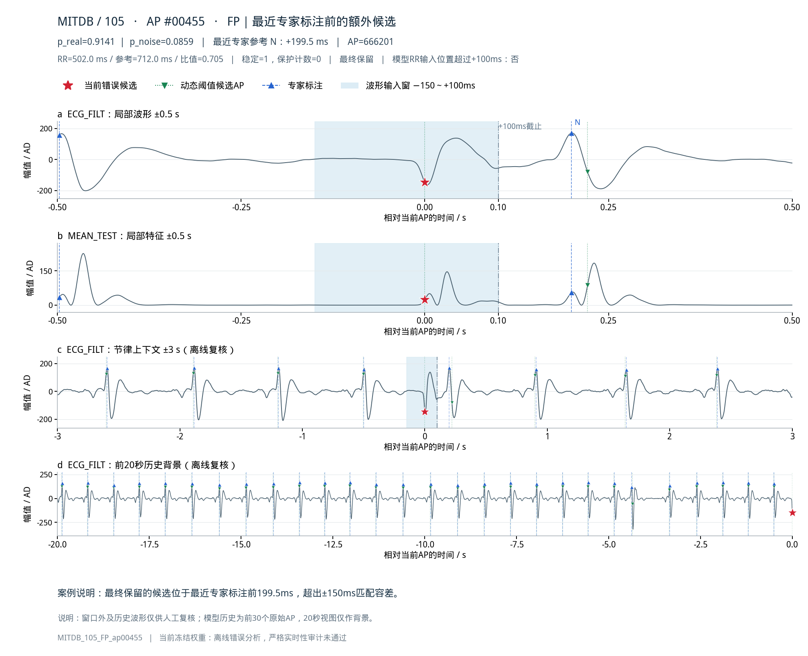
候选位于最近专家标注前199.5ms，超出±150ms评价容差；最终保留为FP。局部形态需结合波形观察，不能仅凭距离判为伪迹。
MITDB_105_FP_ap00869
FP｜最近专家标注前的额外候选
候选位于最近专家标注前255.0ms，超出±150ms评价容差；最终保留为FP。局部形态需结合波形观察，不能仅凭距离判为伪迹。
MITDB_105_FP_ap01423
FP｜最近专家标注后的额外候选
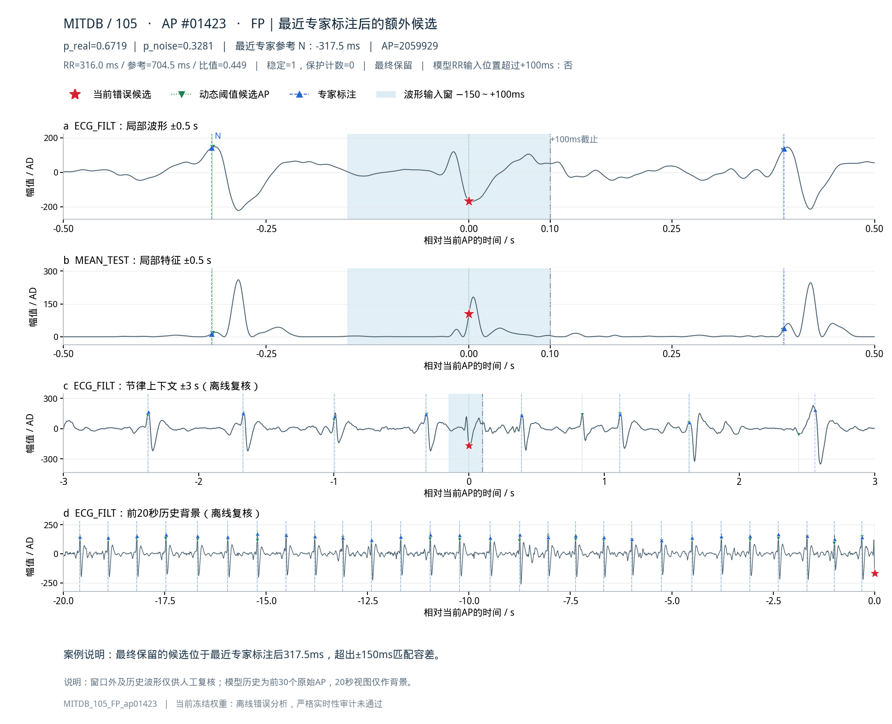
候选位于最近专家标注后317.5ms，超出±150ms评价容差；最终保留为FP。局部形态需结合波形观察，不能仅凭距离判为伪迹。
MITDB_105_FP_ap01425
FP｜最近专家标注前的额外候选
候选位于最近专家标注前280.0ms，超出±150ms评价容差；最终保留为FP。局部形态需结合波形观察，不能仅凭距离判为伪迹。
MITDB_105_FP_ap01677
FP｜最近专家标注后的额外候选
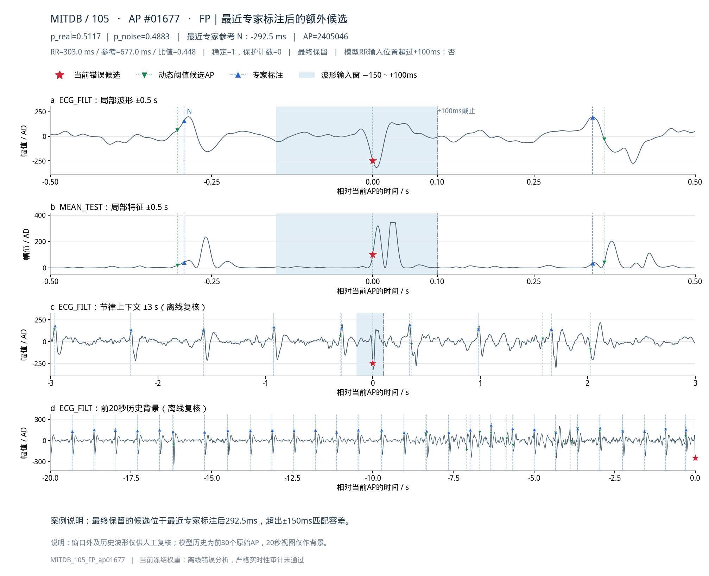
候选位于最近专家标注后292.5ms，超出±150ms评价容差；最终保留为FP。局部形态需结合波形观察，不能仅凭距离判为伪迹。
MITDB_105_FP_ap01681
FP｜最近专家标注后的额外候选
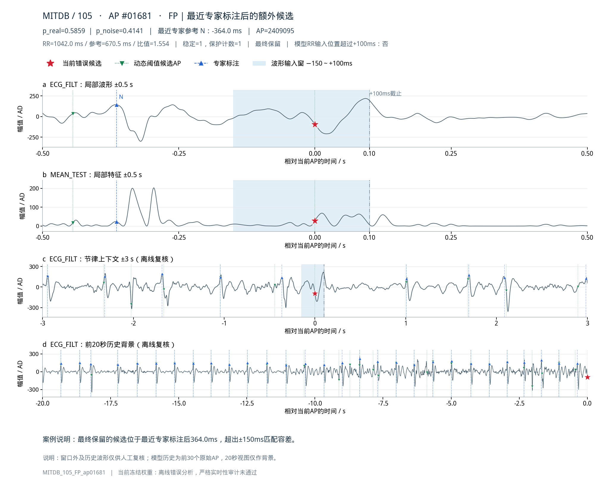
候选位于最近专家标注后364.0ms，超出±150ms评价容差；最终保留为FP。局部形态需结合波形观察，不能仅凭距离判为伪迹。
MITDB_105_FP_ap01686
FP｜最近专家标注前的额外候选
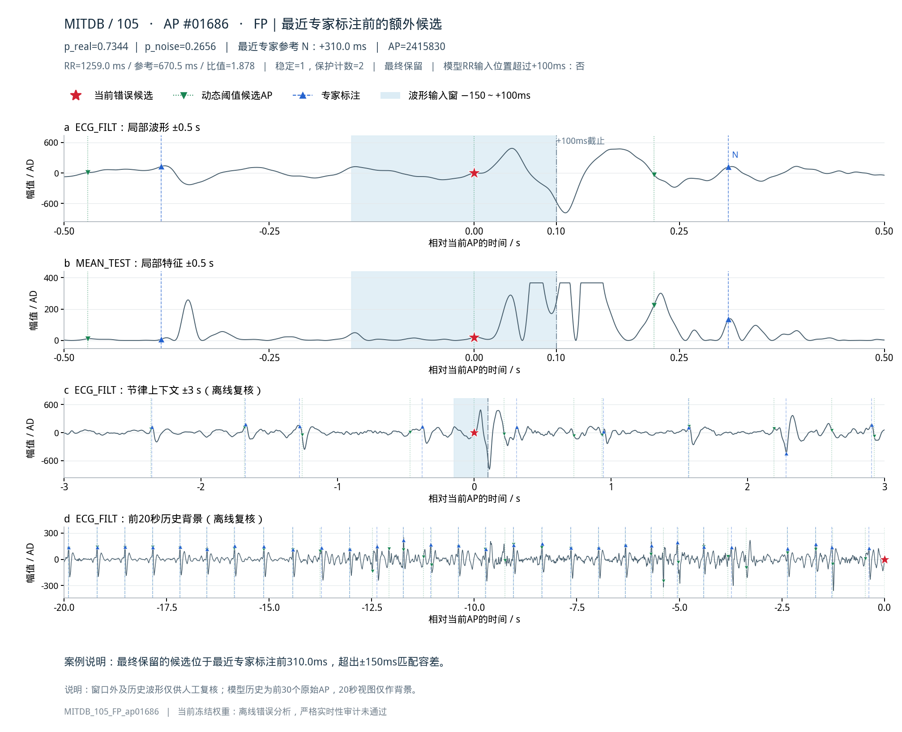
候选位于最近专家标注前310.0ms，超出±150ms评价容差；最终保留为FP。局部形态需结合波形观察，不能仅凭距离判为伪迹。
MITDB_105_FP_ap01698
FP｜最近专家标注后的额外候选
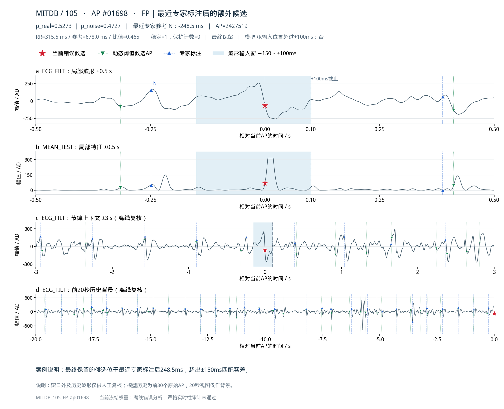
候选位于最近专家标注后248.5ms，超出±150ms评价容差；最终保留为FP。局部形态需结合波形观察，不能仅凭距离判为伪迹。
MITDB_105_FP_ap01716
FP｜最近专家标注前的额外候选
候选位于最近专家标注前178.0ms，超出±150ms评价容差；最终保留为FP。局部形态需结合波形观察，不能仅凭距离判为伪迹。
MITDB_105_FP_ap01752
FP｜最近专家标注前的额外候选
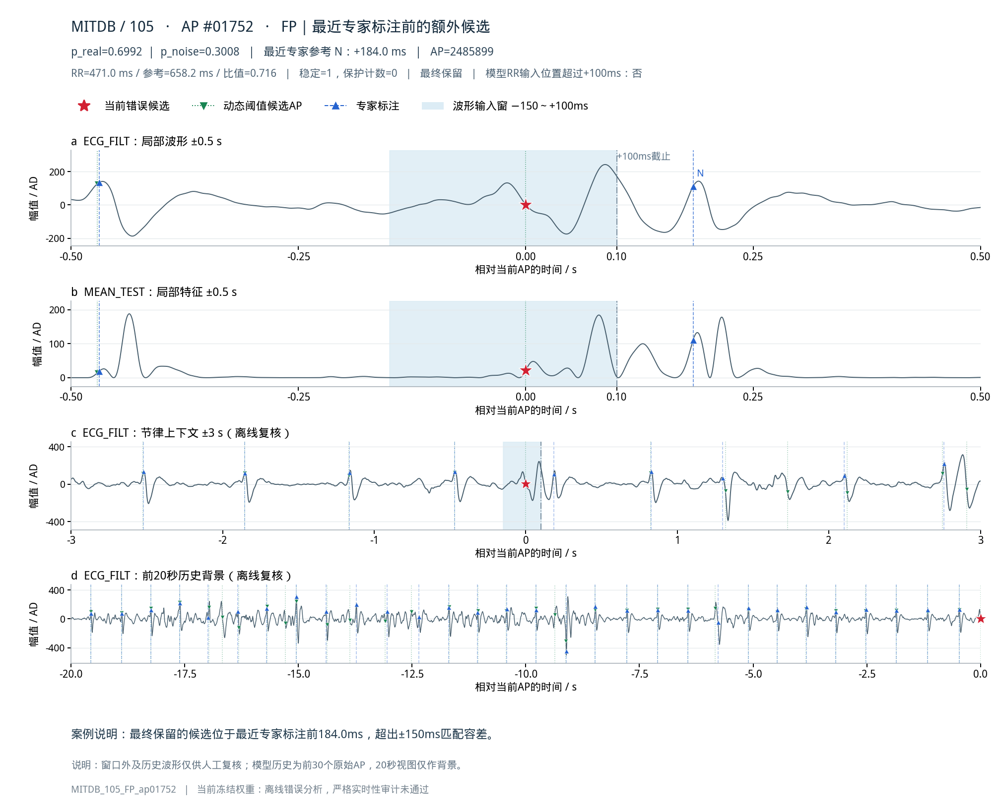
候选位于最近专家标注前184.0ms，超出±150ms评价容差；最终保留为FP。局部形态需结合波形观察，不能仅凭距离判为伪迹。
MITDB_105_FP_ap01796
FP｜最近专家标注前的额外候选
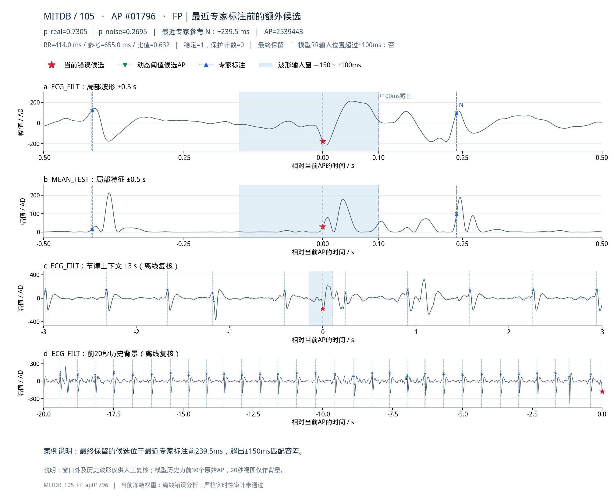
候选位于最近专家标注前239.5ms，超出±150ms评价容差；最终保留为FP。局部形态需结合波形观察，不能仅凭距离判为伪迹。
MITDB_105_FP_ap01860
FP｜最近专家标注前的额外候选
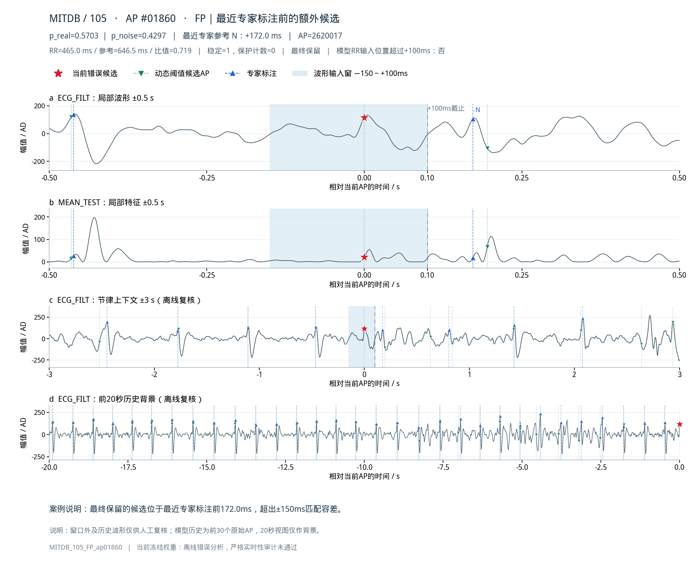
候选位于最近专家标注前172.0ms，超出±150ms评价容差；最终保留为FP。局部形态需结合波形观察，不能仅凭距离判为伪迹。
MITDB_105_FP_ap01866
FP｜最近专家标注后的额外候选
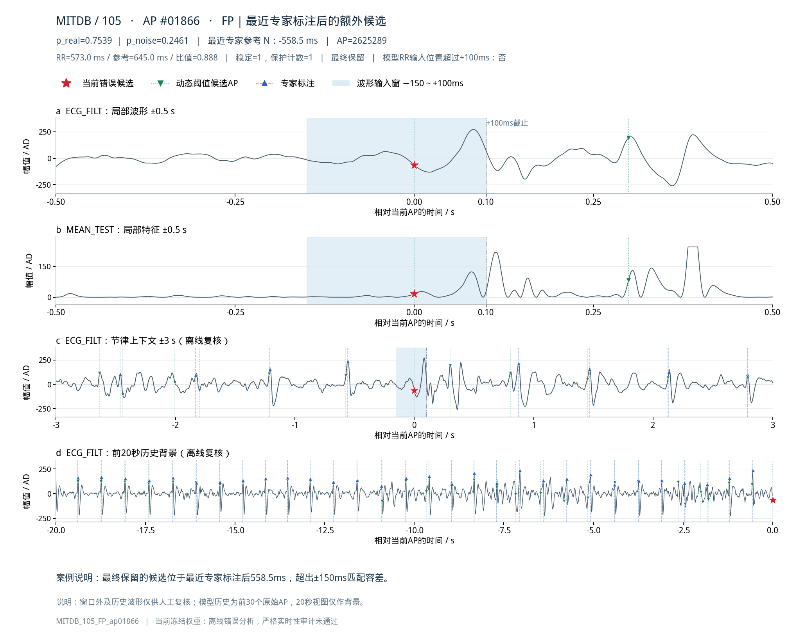
候选位于最近专家标注后558.5ms，超出±150ms评价容差；最终保留为FP。局部形态需结合波形观察，不能仅凭距离判为伪迹。
MITDB_105_FP_ap01881
FP｜最近专家标注前的额外候选
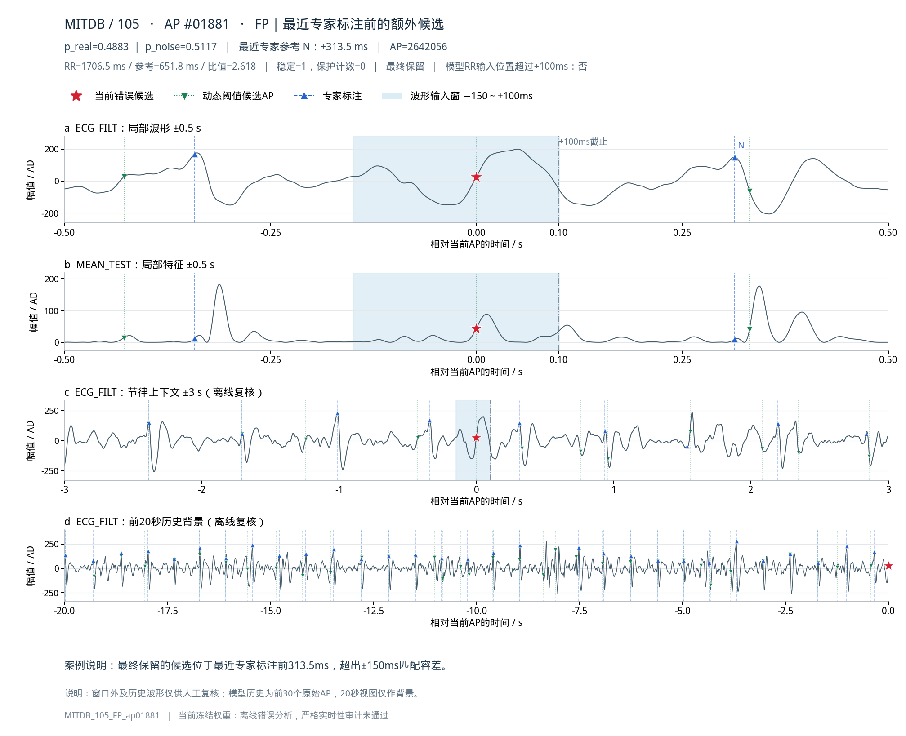
候选位于最近专家标注前313.5ms，超出±150ms评价容差；最终保留为FP。局部形态需结合波形观察，不能仅凭距离判为伪迹。
MITDB_105_FP_ap01891
FP｜最近专家标注后的额外候选
候选位于最近专家标注后247.0ms，超出±150ms评价容差；最终保留为FP。局部形态需结合波形观察，不能仅凭距离判为伪迹。
MITDB_105_FP_ap01897
FP｜最近专家标注前的额外候选
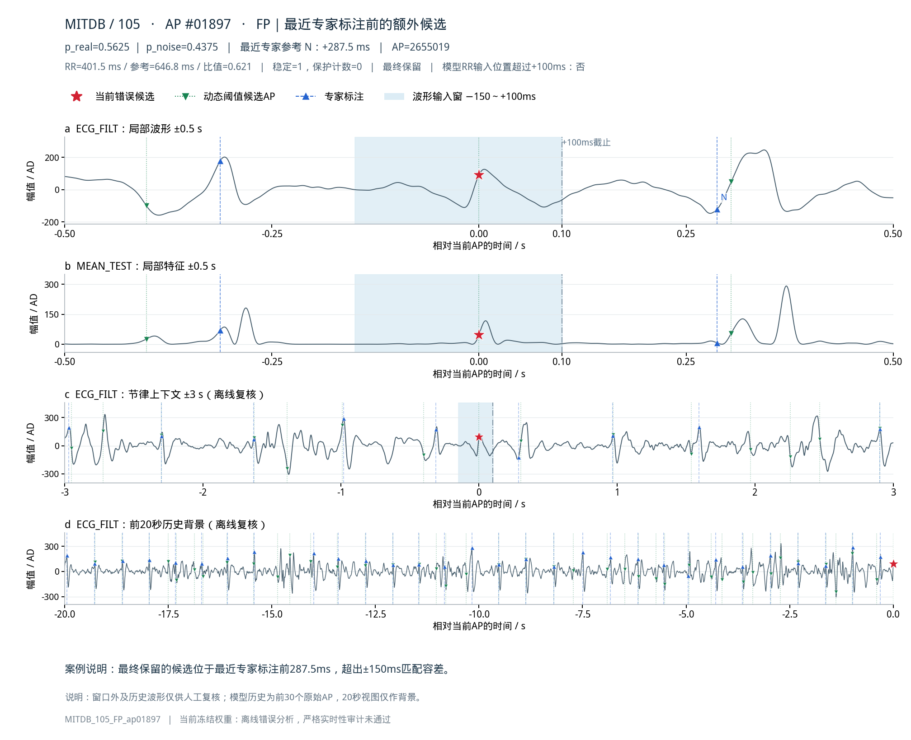
候选位于最近专家标注前287.5ms，超出±150ms评价容差；最终保留为FP。局部形态需结合波形观察，不能仅凭距离判为伪迹。
MITDB_105_FP_ap01902
FP｜最近专家标注前的额外候选
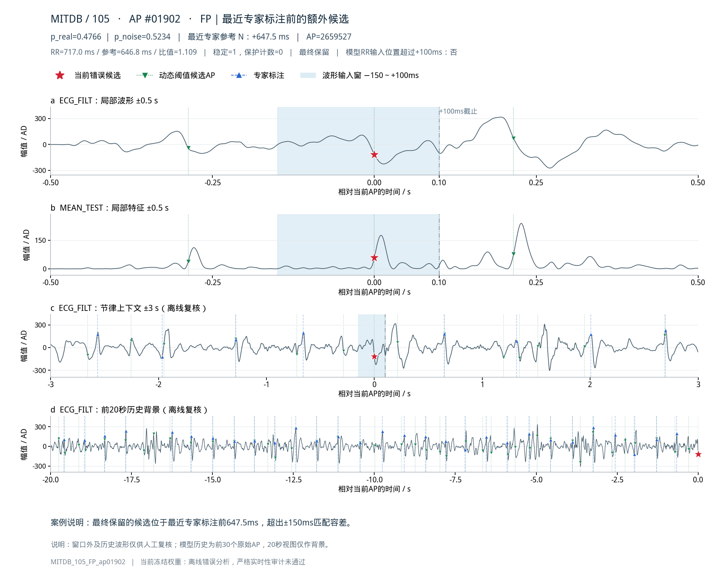
候选位于最近专家标注前647.5ms，超出±150ms评价容差；最终保留为FP。局部形态需结合波形观察，不能仅凭距离判为伪迹。
MITDB_105_FP_ap01907
FP｜最近专家标注后的额外候选
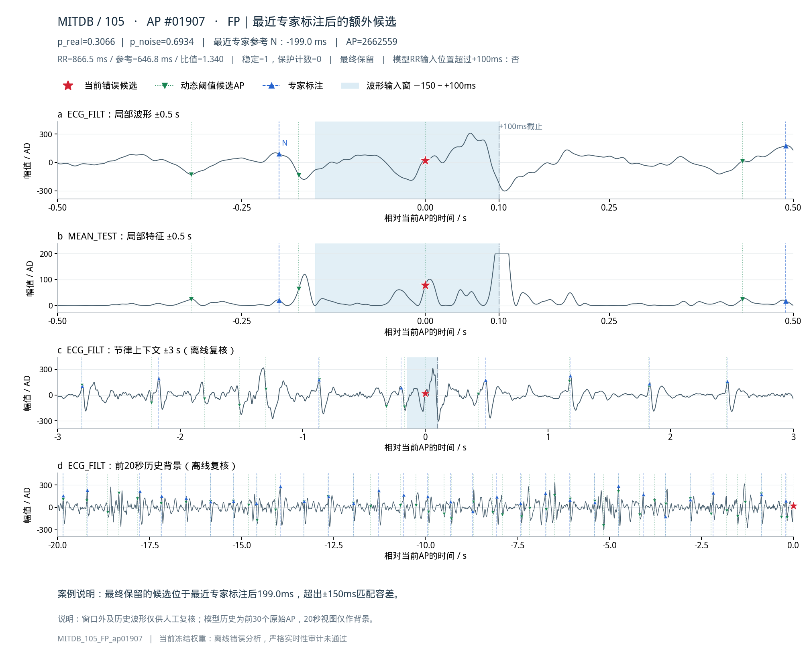
候选位于最近专家标注后199.0ms，超出±150ms评价容差；最终保留为FP。局部形态需结合波形观察，不能仅凭距离判为伪迹。
MITDB_105_FP_ap02342
FP｜最近专家标注前的额外候选
候选位于最近专家标注前187.5ms，超出±150ms评价容差；最终保留为FP。局部形态需结合波形观察，不能仅凭距离判为伪迹。
MITDB_105_FP_ap02386
FP｜最近专家标注前的额外候选
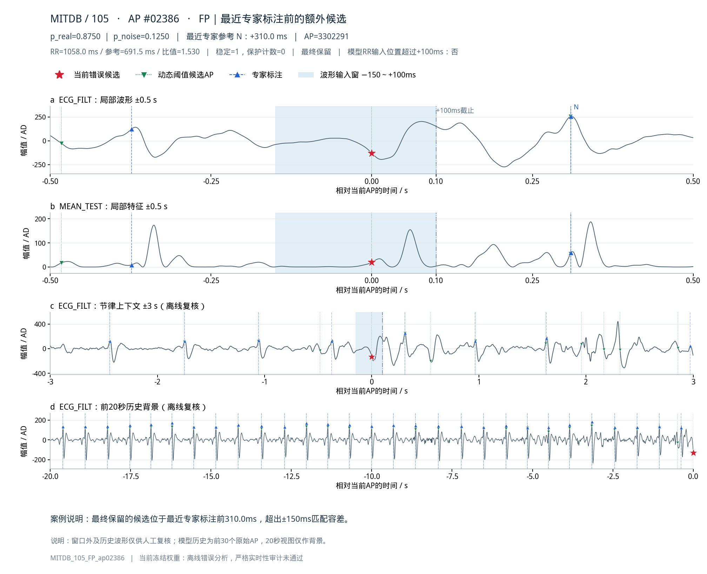
候选位于最近专家标注前310.0ms，超出±150ms评价容差；最终保留为FP。局部形态需结合波形观察，不能仅凭距离判为伪迹。
MITDB_105_FP_ap02388
FP｜最近专家标注后的额外候选
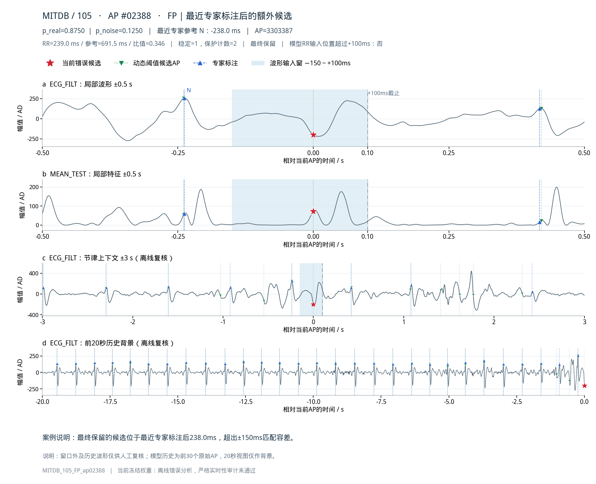
候选位于最近专家标注后238.0ms，超出±150ms评价容差；最终保留为FP。局部形态需结合波形观察，不能仅凭距离判为伪迹。
MITDB_105_FP_ap02393
FP｜最近专家标注前的额外候选
候选位于最近专家标注前653.0ms，超出±150ms评价容差；最终保留为FP。局部形态需结合波形观察，不能仅凭距离判为伪迹。
MITDB_105_FP_ap02458
FP｜最近专家标注前的额外候选
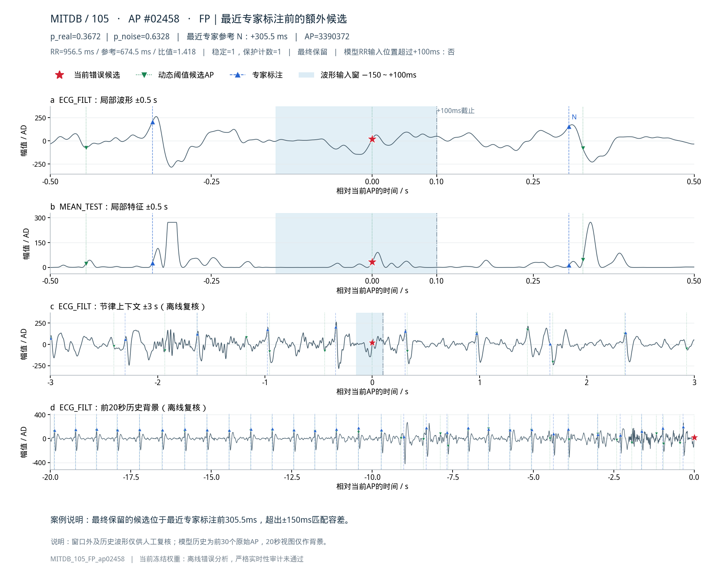
候选位于最近专家标注前305.5ms，超出±150ms评价容差；最终保留为FP。局部形态需结合波形观察，不能仅凭距离判为伪迹。
MITDB_105_FP_ap02496
FP｜最近专家标注前的额外候选
候选位于最近专家标注前244.0ms，超出±150ms评价容差；最终保留为FP。局部形态需结合波形观察，不能仅凭距离判为伪迹。
MITDB_105_FP_ap02622
FP｜最近专家标注后的额外候选
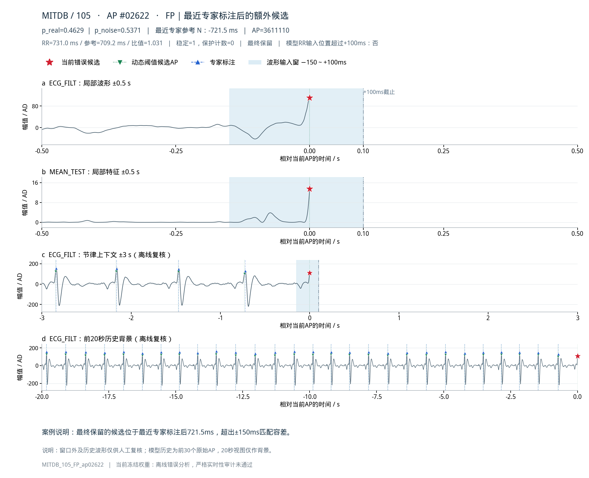
候选位于最近专家标注后721.5ms，超出±150ms评价容差；最终保留为FP。局部形态需结合波形观察，不能仅凭距离判为伪迹。
MITDB_105_FN_event01171_ap01165
FN｜专家参考位置超出波形输入窗
专家N类事件最终漏检；其参考位置在AP后111.0ms，超出波形输入的+100ms截止。该事实说明波形观察受限，不能单独证明模型无法识别。本样本RR输入引用了+100ms之外的位置，不能作为严格实时性能证据。
MITDB_105_FN_event01179_ap01172
FN｜模型阶段漏检，专家位置在窗口内
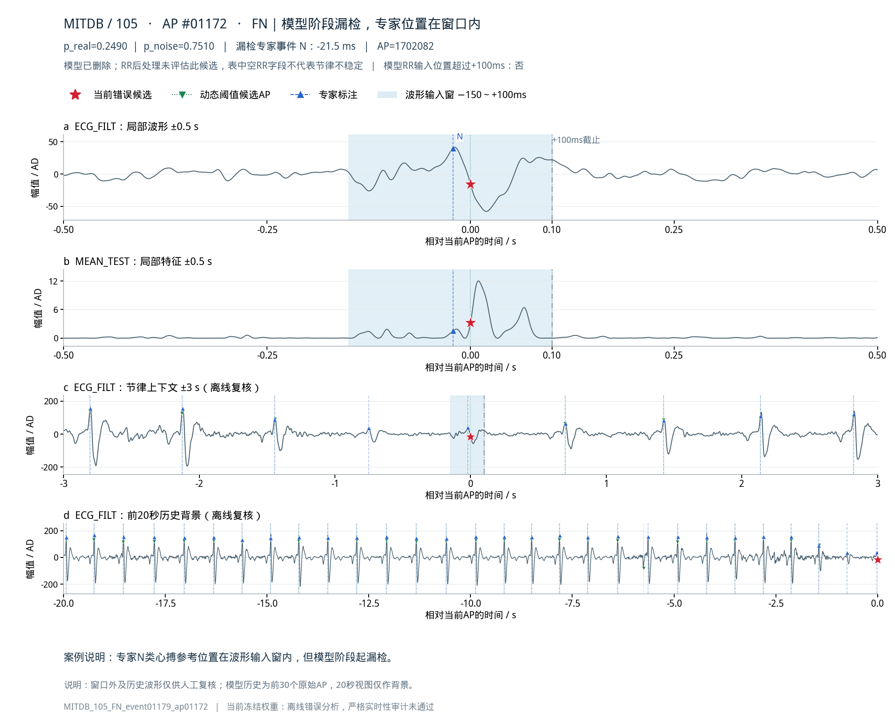
专家N类事件在V11_B阶段检出，模型阶段起漏检；参考位置相对AP为-21.5ms，在−150～+100ms波形窗内。关联候选的低模型概率表明窗口内真实心搏未被放行。
MITDB_105_FN_event01679_ap01680
FN｜模型阶段漏检，专家位置在窗口内
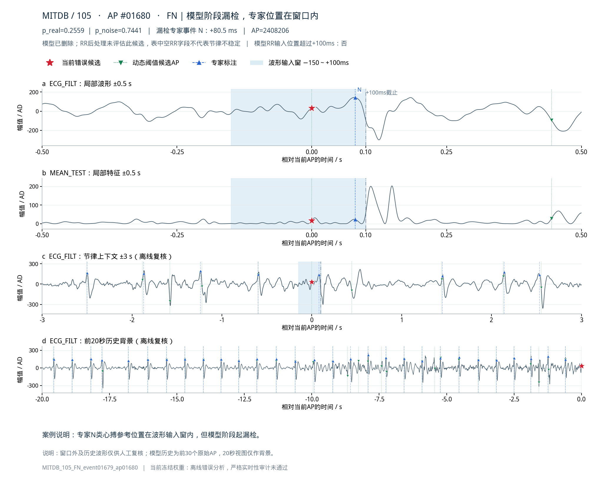
专家N类事件在V11_B阶段检出，模型阶段起漏检；参考位置相对AP为+80.5ms，在−150～+100ms波形窗内。关联候选的低模型概率表明窗口内真实心搏未被放行。
MITDB_105_FN_event01683_ap01685
FN｜模型阶段漏检，专家位置在窗口内
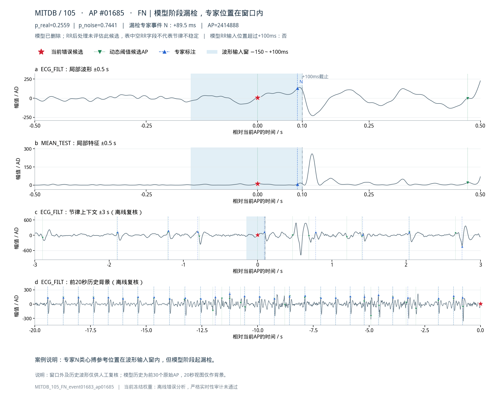
专家N类事件在V11_B阶段检出，模型阶段起漏检；参考位置相对AP为+89.5ms，在−150～+100ms波形窗内。关联候选的低模型概率表明窗口内真实心搏未被放行。
MITDB_105_FN_event01685_ap01689
FN｜模型阶段漏检，专家位置在窗口内
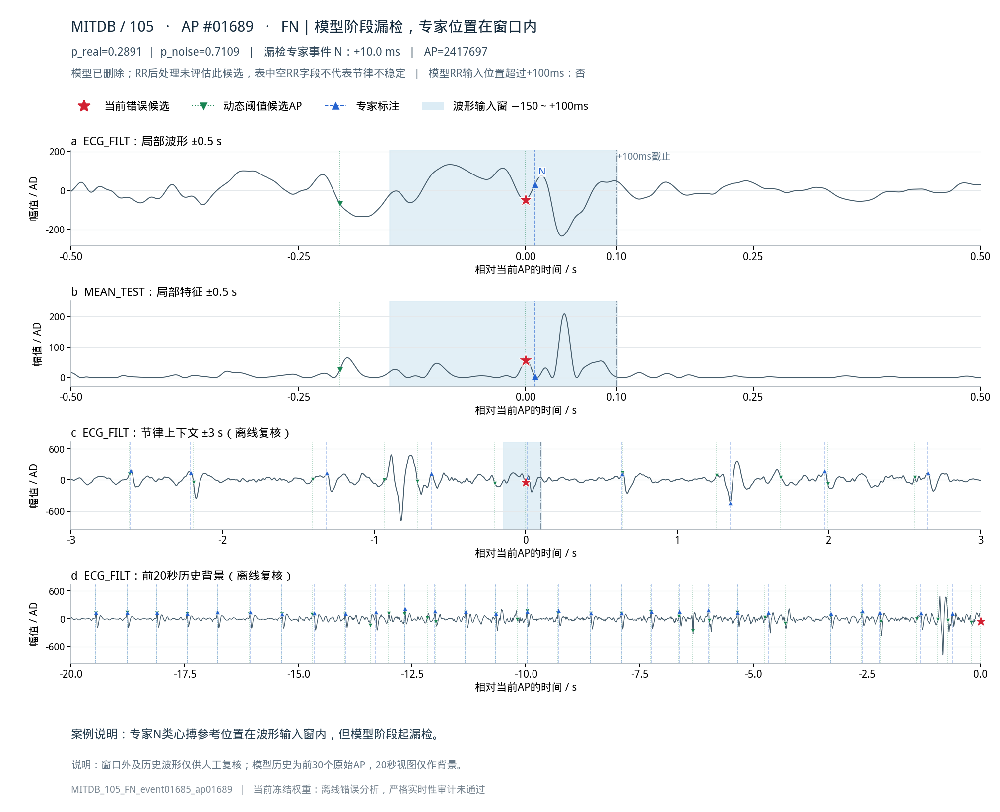
专家N类事件在V11_B阶段检出，模型阶段起漏检；参考位置相对AP为+10.0ms，在−150～+100ms波形窗内。关联候选的低模型概率表明窗口内真实心搏未被放行。
MITDB_105_FN_event01688_ap01693
FN｜模型阶段漏检，专家位置在窗口内
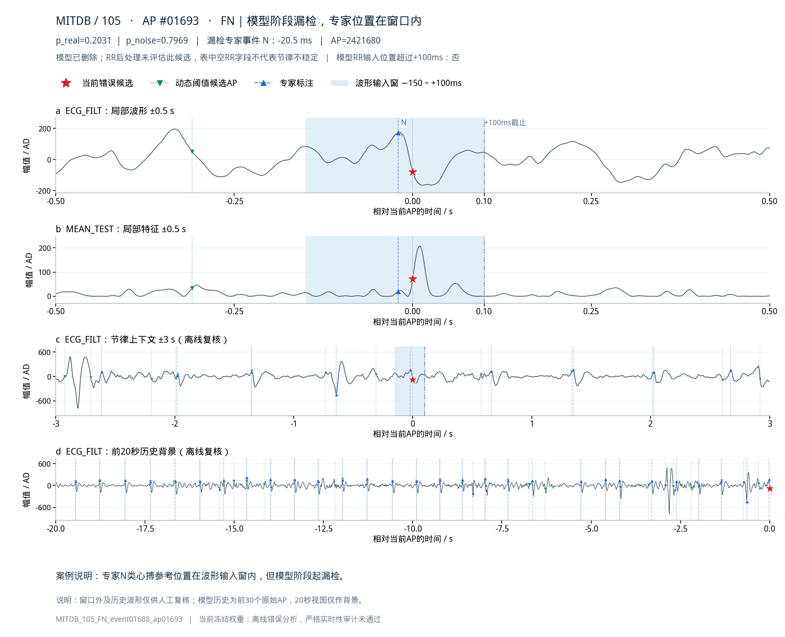
专家N类事件在V11_B阶段检出，模型阶段起漏检；参考位置相对AP为-20.5ms，在−150～+100ms波形窗内。关联候选的低模型概率表明窗口内真实心搏未被放行。
MITDB_105_FN_event01689_ap01694
FN｜模型阶段漏检，专家位置在窗口内
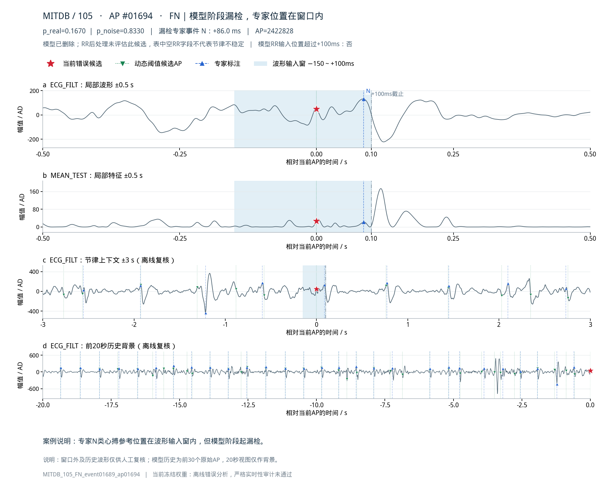
专家N类事件在V11_B阶段检出，模型阶段起漏检；参考位置相对AP为+86.0ms，在−150～+100ms波形窗内。关联候选的低模型概率表明窗口内真实心搏未被放行。
MITDB_105_FN_event01693_ap01699
FN｜模型阶段漏检，专家位置在窗口内
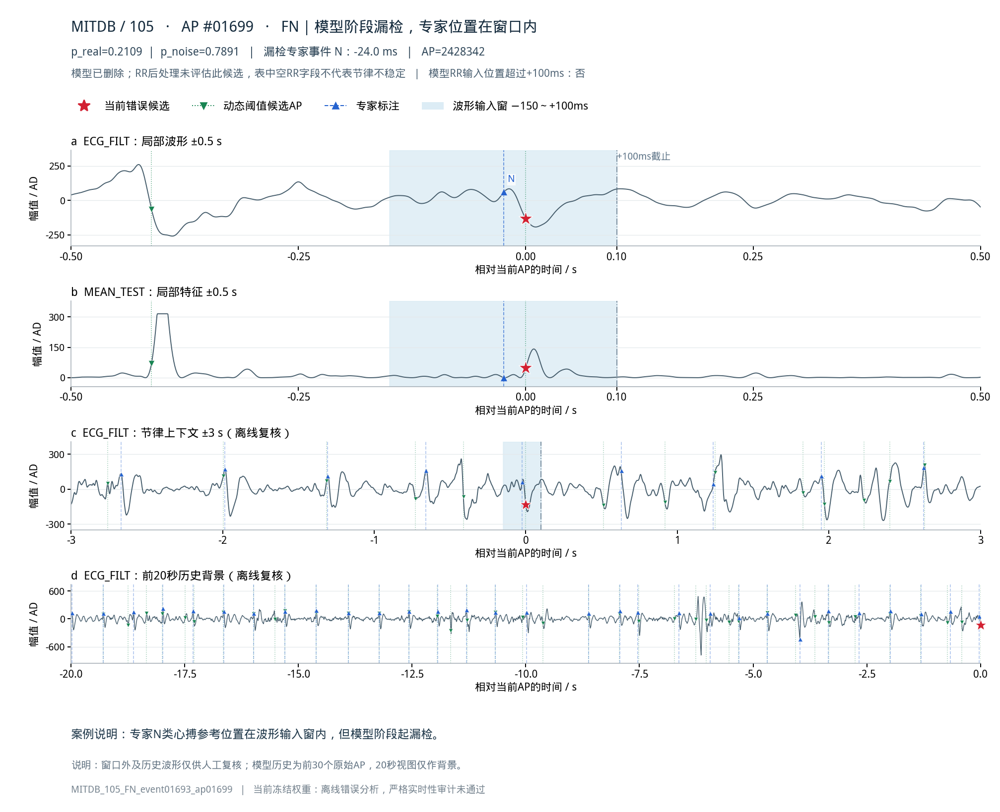
专家N类事件在V11_B阶段检出，模型阶段起漏检；参考位置相对AP为-24.0ms，在−150～+100ms波形窗内。关联候选的低模型概率表明窗口内真实心搏未被放行。
MITDB_105_FN_event01701_ap01711
FN｜模型阶段漏检，专家位置在窗口内
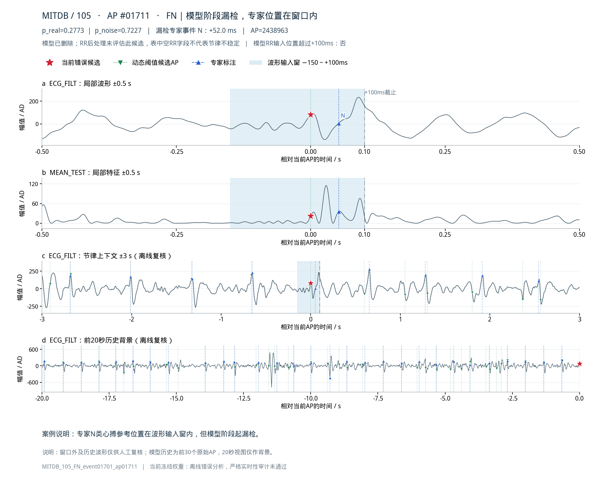
专家N类事件在V11_B阶段检出，模型阶段起漏检；参考位置相对AP为+52.0ms，在−150～+100ms波形窗内。关联候选的低模型概率表明窗口内真实心搏未被放行。
MITDB_105_FN_event01705_ap01717
FN｜RR Rule 2删除真实心搏候选
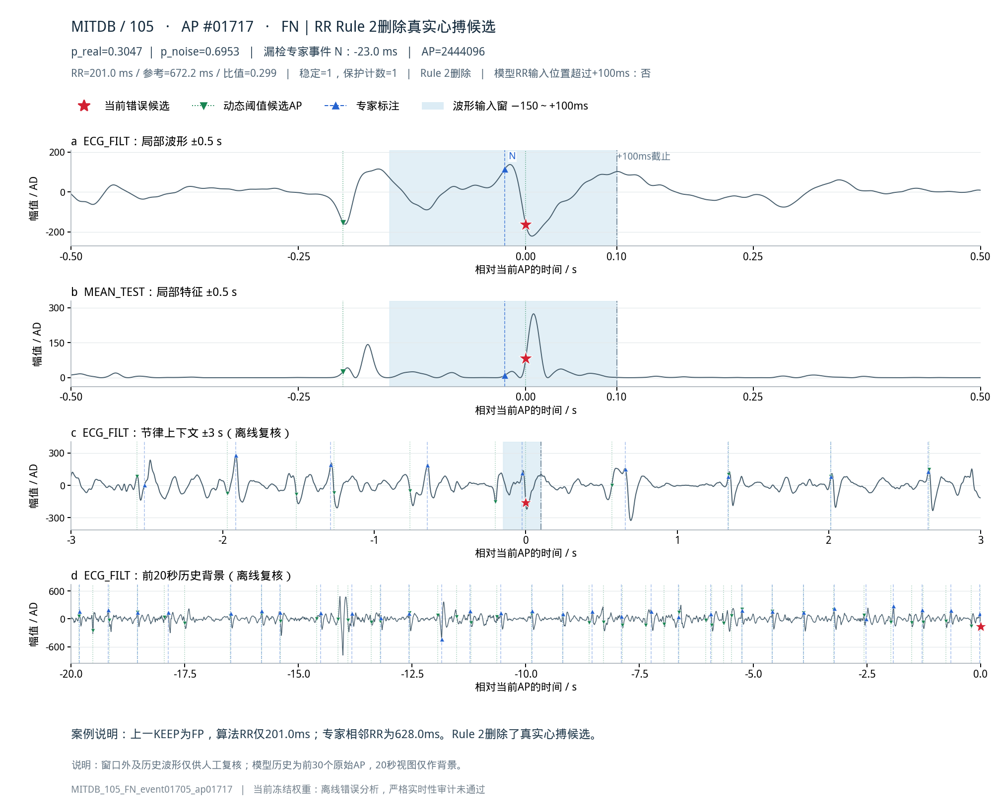
专家N类事件在模型阶段检出，随后关联候选被Rule 2删除。RR=201.0ms、参考RR=672.2ms，比值0.299；专家位置相对AP为-23.0ms，处于波形输入窗内。上一最终KEEP为FP（AP#1716），而相邻专家心搏间隔为628.0ms；保留FP成为时间锚点，使当前RR显得过短。
MITDB_105_FN_event01706_ap01718
FN｜模型阶段漏检，专家位置在窗口内
专家N类事件在V11_B阶段检出，模型阶段起漏检；参考位置相对AP为+90.0ms，在−150～+100ms波形窗内。关联候选的低模型概率表明窗口内真实心搏未被放行。
MITDB_105_FN_event01716_ap01730
FN｜专家参考位置超出波形输入窗
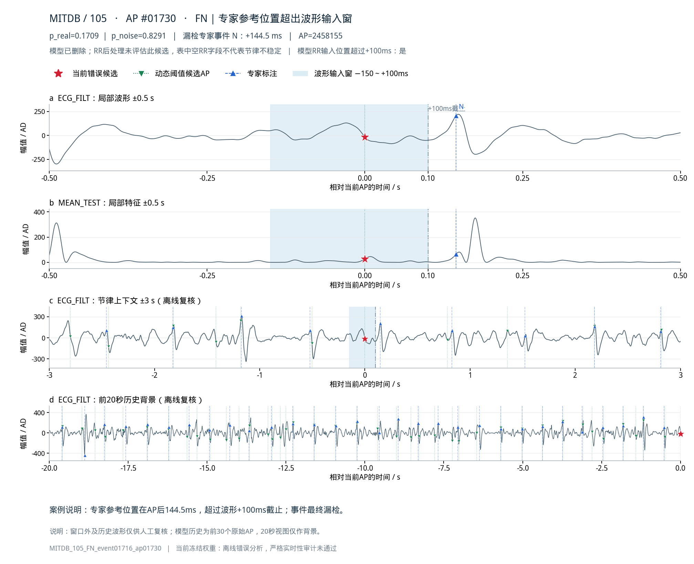
专家N类事件最终漏检；其参考位置在AP后144.5ms，超出波形输入的+100ms截止。该事实说明波形观察受限，不能单独证明模型无法识别。本样本RR输入引用了+100ms之外的位置，不能作为严格实时性能证据。
MITDB_105_FN_event01720_ap01734
FN｜模型阶段漏检，专家位置在窗口内
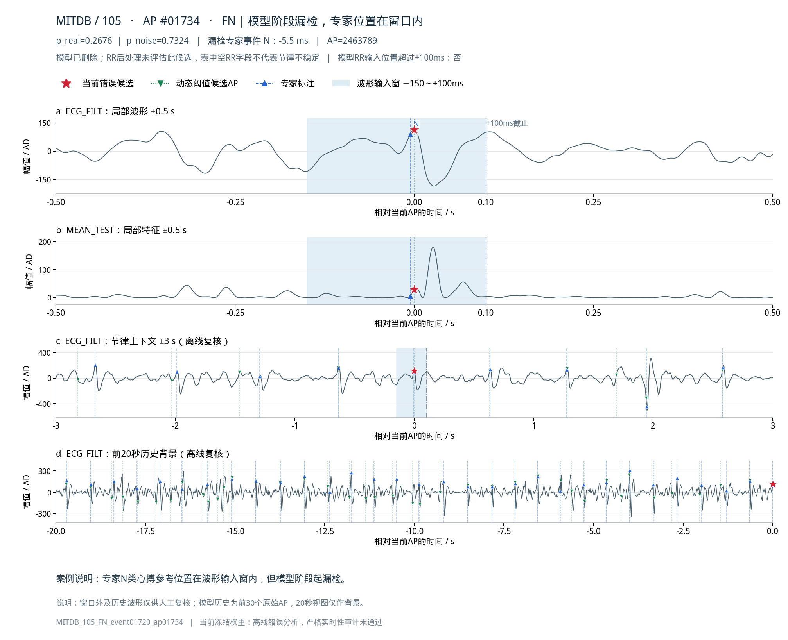
专家N类事件在V11_B阶段检出，模型阶段起漏检；参考位置相对AP为-5.5ms，在−150～+100ms波形窗内。关联候选的低模型概率表明窗口内真实心搏未被放行。
MITDB_105_FN_event01841_ap01863
FN｜模型阶段漏检，专家位置在窗口内
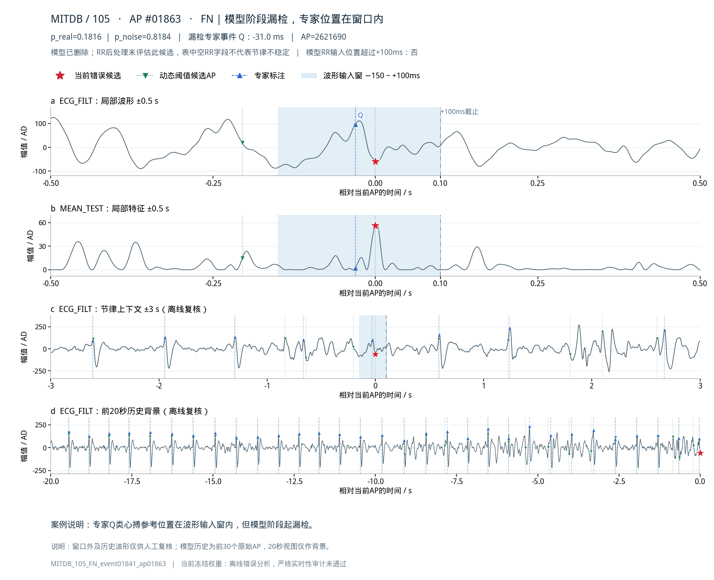
专家Q类事件在V11_B阶段检出，模型阶段起漏检；参考位置相对AP为-31.0ms，在−150～+100ms波形窗内。关联候选的低模型概率表明窗口内真实心搏未被放行。
MITDB_105_FN_event01850_ap01875
FN｜专家参考位置超出波形输入窗
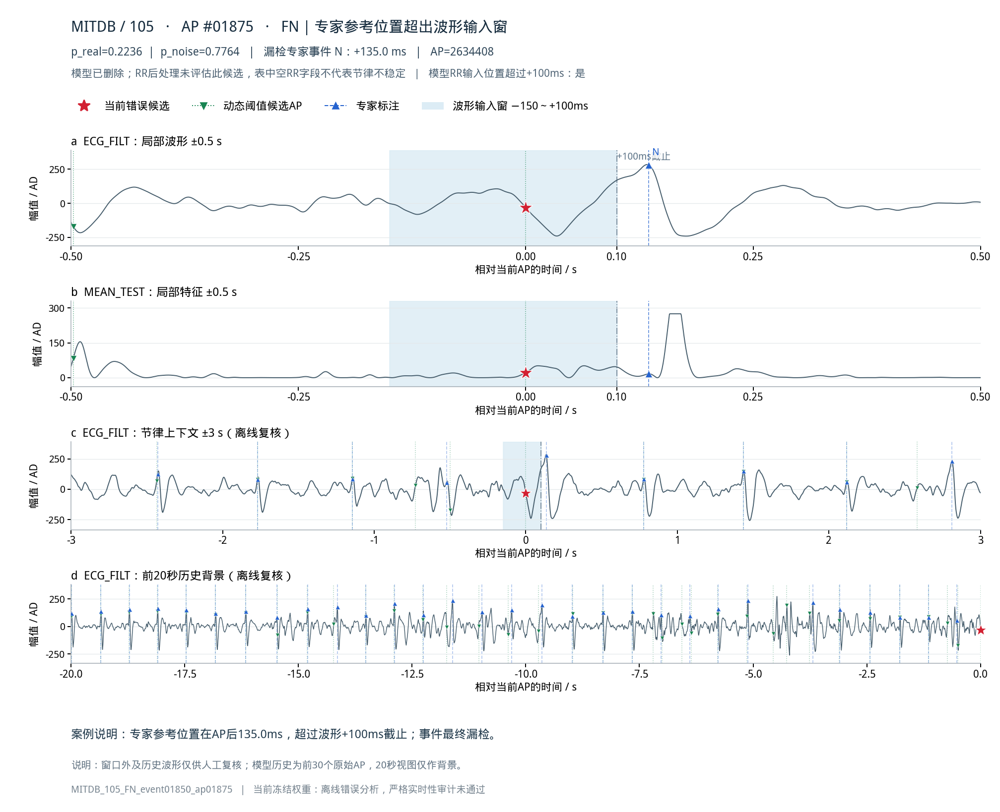
专家N类事件最终漏检；其参考位置在AP后135.0ms，超出波形输入的+100ms截止。该事实说明波形观察受限，不能单独证明模型无法识别。本样本RR输入引用了+100ms之外的位置，不能作为严格实时性能证据。
MITDB_105_FN_event01855_ap01880
FN｜模型阶段漏检，专家位置在窗口内
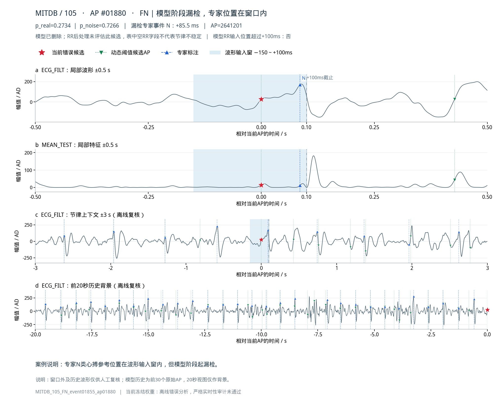
专家N类事件在V11_B阶段检出，模型阶段起漏检；参考位置相对AP为+85.5ms，在−150～+100ms波形窗内。关联候选的低模型概率表明窗口内真实心搏未被放行。
MITDB_105_FN_event01859_ap01886
FN｜专家参考位置超出波形输入窗
专家N类事件最终漏检；其参考位置在AP后112.5ms，超出波形输入的+100ms截止。该事实说明波形观察受限，不能单独证明模型无法识别。本样本RR输入引用了+100ms之外的位置，不能作为严格实时性能证据。
MITDB_105_FN_event01861_ap01890
FN｜模型阶段漏检，专家位置在窗口内
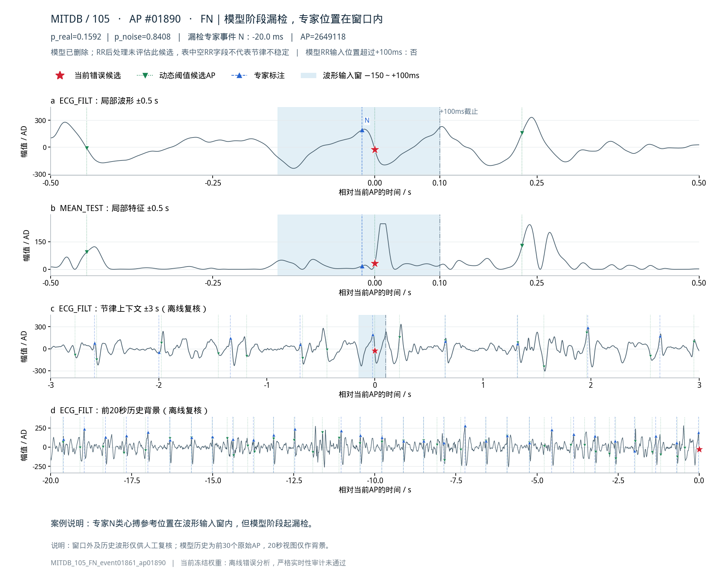
专家N类事件在V11_B阶段检出，模型阶段起漏检；参考位置相对AP为-20.0ms，在−150～+100ms波形窗内。关联候选的低模型概率表明窗口内真实心搏未被放行。
MITDB_105_FN_event01870_ap01905
FN｜专家参考位置超出波形输入窗
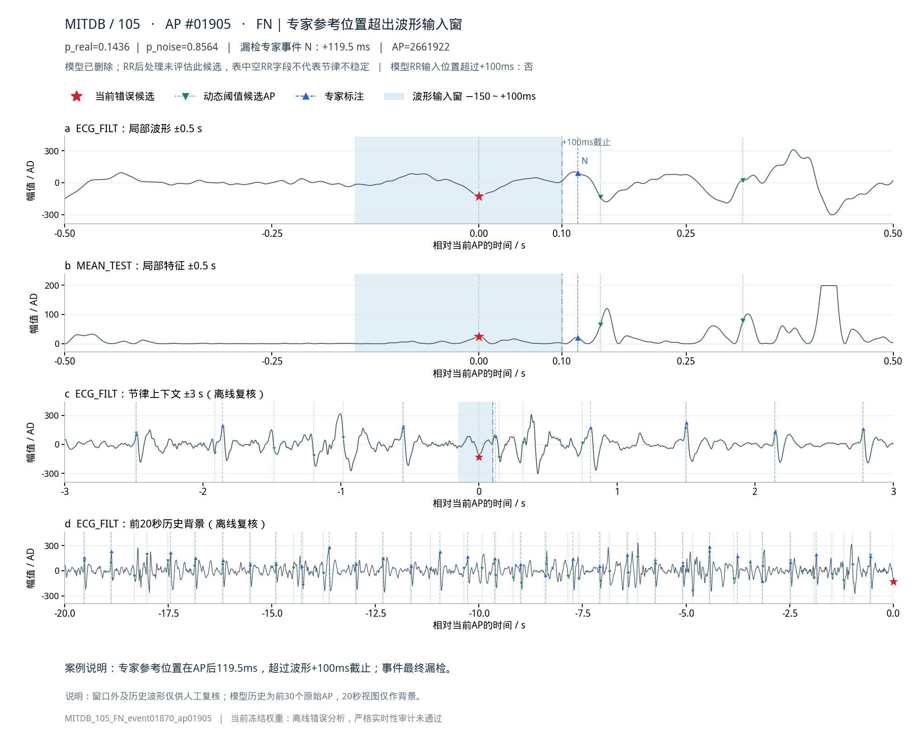
专家N类事件最终漏检；其参考位置在AP后119.5ms，超出波形输入的+100ms截止。该事实说明波形观察受限，不能单独证明模型无法识别。
MITDB_105_FN_event01888_ap01926
FN｜专家参考位置超出波形输入窗
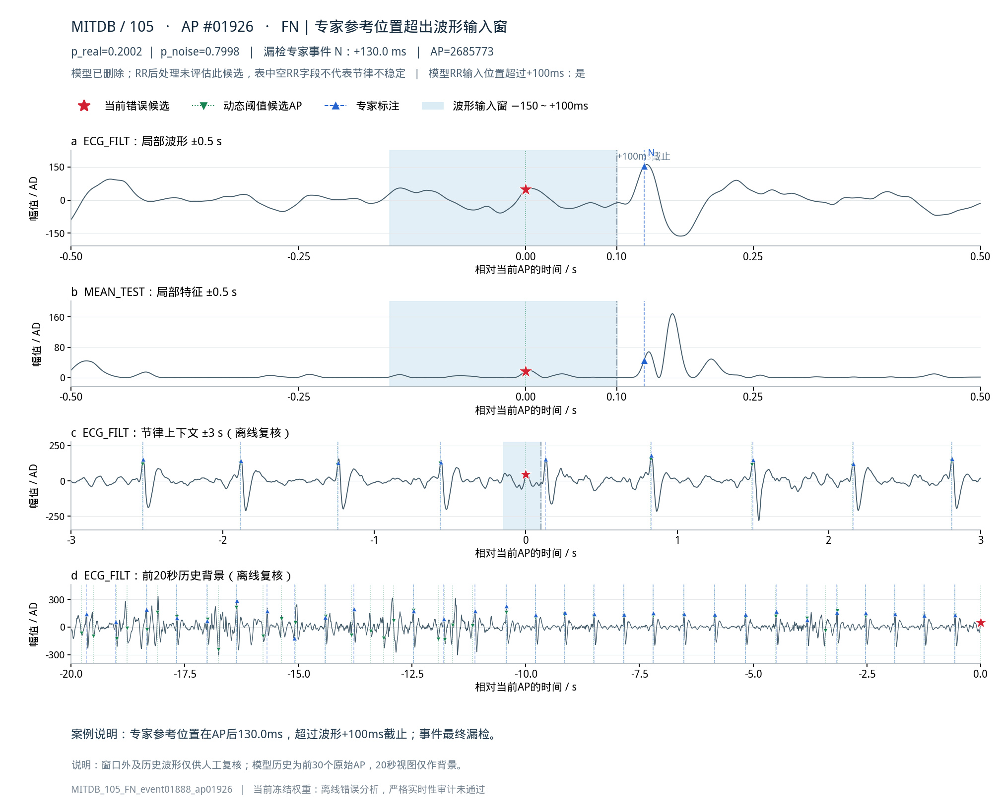
专家N类事件最终漏检；其参考位置在AP后130.0ms，超出波形输入的+100ms截止。该事实说明波形观察受限，不能单独证明模型无法识别。本样本RR输入引用了+100ms之外的位置，不能作为严格实时性能证据。
MITDB_105_FN_event02347_ap02385
FN｜专家参考位置超出波形输入窗
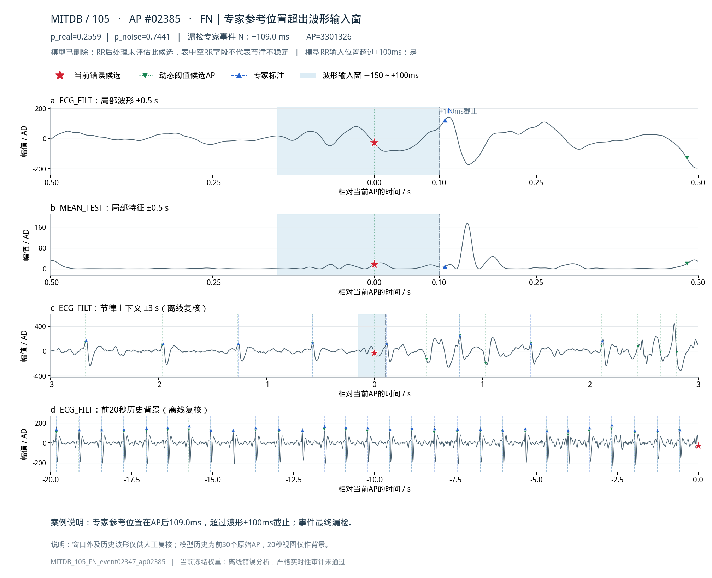
专家N类事件最终漏检；其参考位置在AP后109.0ms，超出波形输入的+100ms截止。该事实说明波形观察受限，不能单独证明模型无法识别。本样本RR输入引用了+100ms之外的位置，不能作为严格实时性能证据。
MITDB_105_FN_event02351_ap02394
FN｜专家参考位置超出波形输入窗
专家Q类事件最终漏检；其参考位置在AP后112.5ms，超出波形输入的+100ms截止。该事实说明波形观察受限，不能单独证明模型无法识别。
MITDB_105_FN_event02405_ap02449
FN｜专家参考位置超出波形输入窗
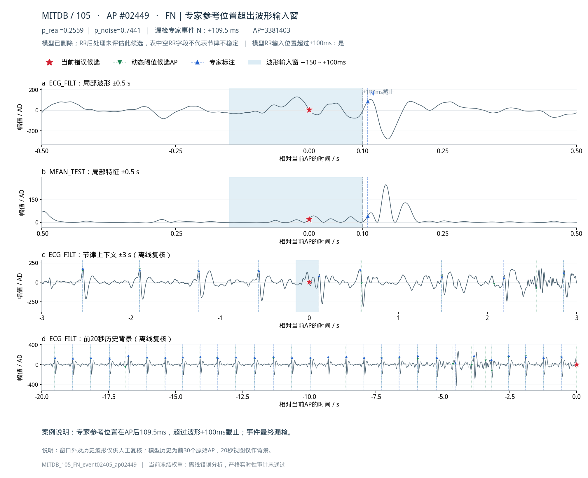
专家N类事件最终漏检；其参考位置在AP后109.5ms，超出波形输入的+100ms截止。该事实说明波形观察受限，不能单独证明模型无法识别。本样本RR输入引用了+100ms之外的位置，不能作为严格实时性能证据。
MITDB_105_FN_event02408_ap02452
FN｜专家参考位置超出波形输入窗
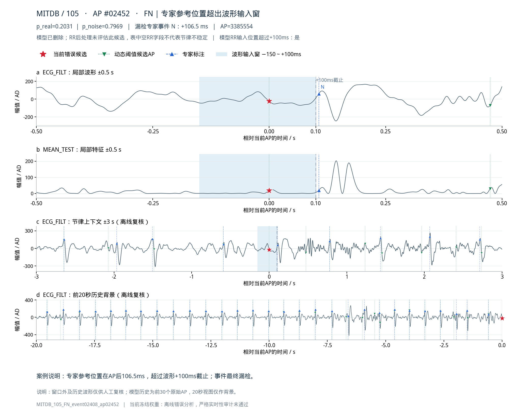
专家N类事件最终漏检；其参考位置在AP后106.5ms，超出波形输入的+100ms截止。该事实说明波形观察受限，不能单独证明模型无法识别。本样本RR输入引用了+100ms之外的位置，不能作为严格实时性能证据。
MITDB_105_FN_event02411_ap02457
FN｜专家参考位置超出波形输入窗
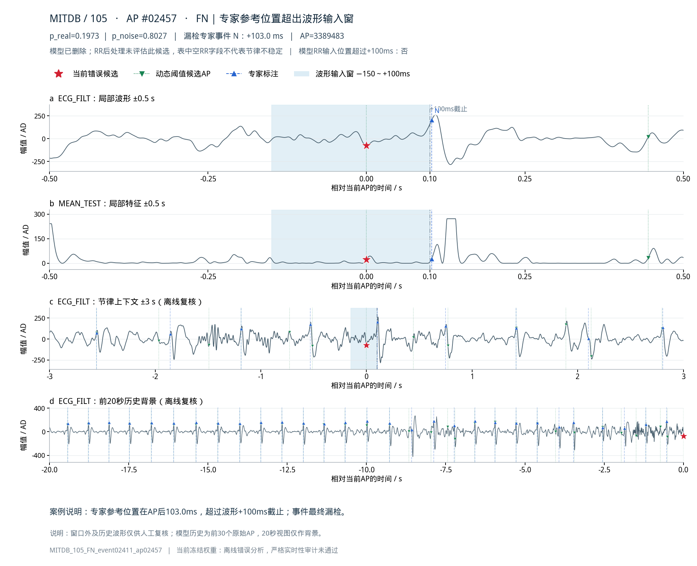
专家N类事件最终漏检；其参考位置在AP后103.0ms，超出波形输入的+100ms截止。该事实说明波形观察受限，不能单独证明模型无法识别。
MITDB_105_FN_event02416_ap02464
FN｜专家参考位置超出波形输入窗
专家N类事件最终漏检；其参考位置在AP后109.0ms，超出波形输入的+100ms截止。该事实说明波形观察受限，不能单独证明模型无法识别。
MITDB_105_FN_event02447_ap02497
FN｜RR Rule 2删除真实心搏候选
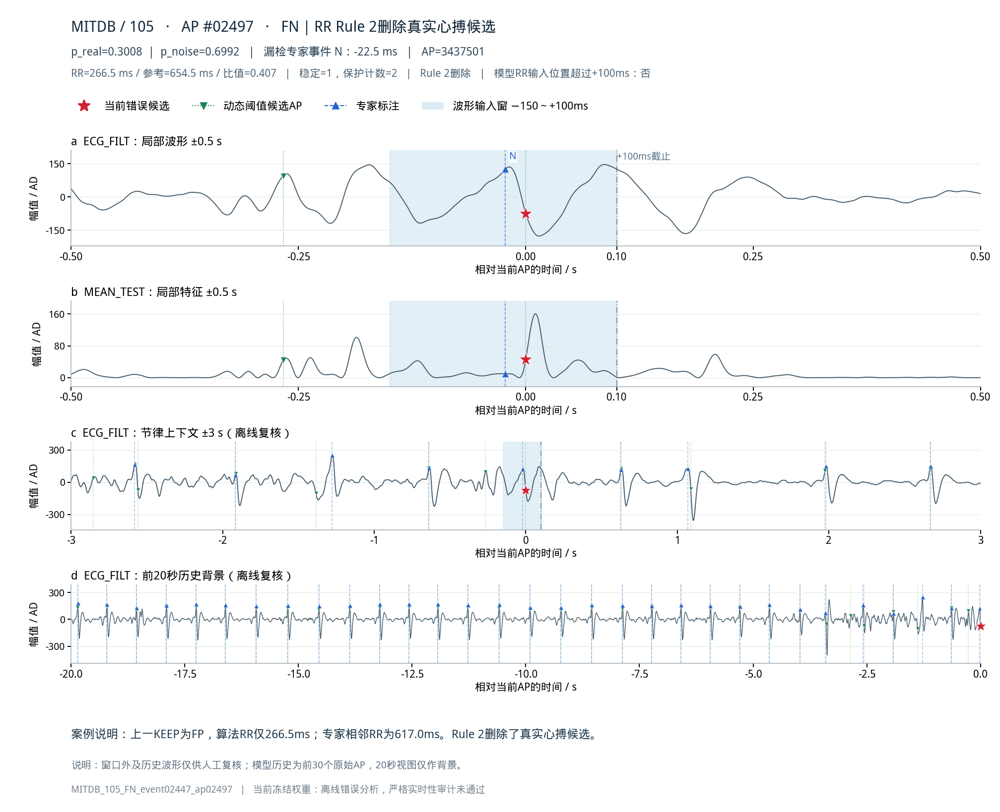
专家N类事件在模型阶段检出，随后关联候选被Rule 2删除。RR=266.5ms、参考RR=654.5ms，比值0.407；专家位置相对AP为-22.5ms，处于波形输入窗内。上一最终KEEP为FP（AP#2496），而相邻专家心搏间隔为617.0ms；保留FP成为时间锚点，使当前RR显得过短。
MITDB_106_FP_ap00785
FP｜最近专家标注前的额外候选
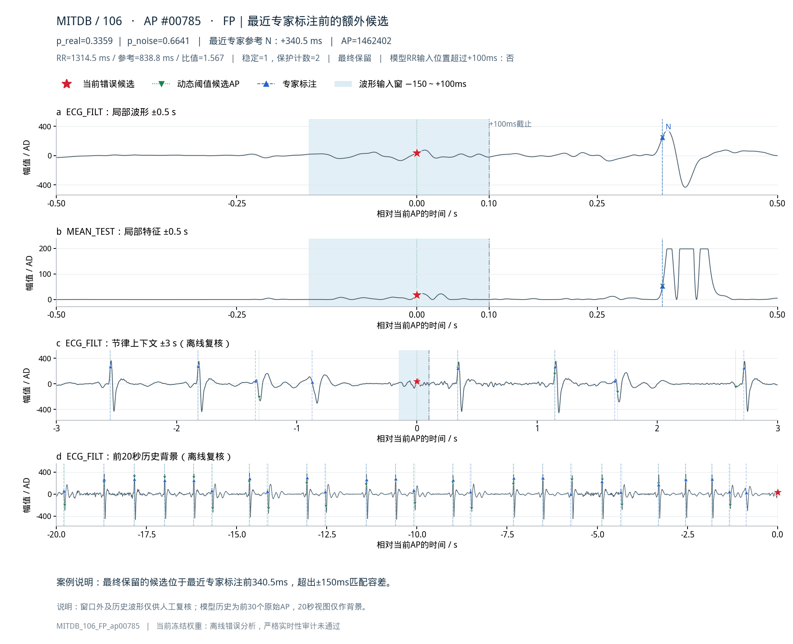
候选位于最近专家标注前340.5ms，超出±150ms评价容差；最终保留为FP。局部形态需结合波形观察，不能仅凭距离判为伪迹。
MITDB_106_FP_ap00895
FP｜最近专家标注前的额外候选
候选位于最近专家标注前233.0ms，超出±150ms评价容差；最终保留为FP。局部形态需结合波形观察，不能仅凭距离判为伪迹。
MITDB_106_FP_ap02013
FP｜最近专家标注后的额外候选
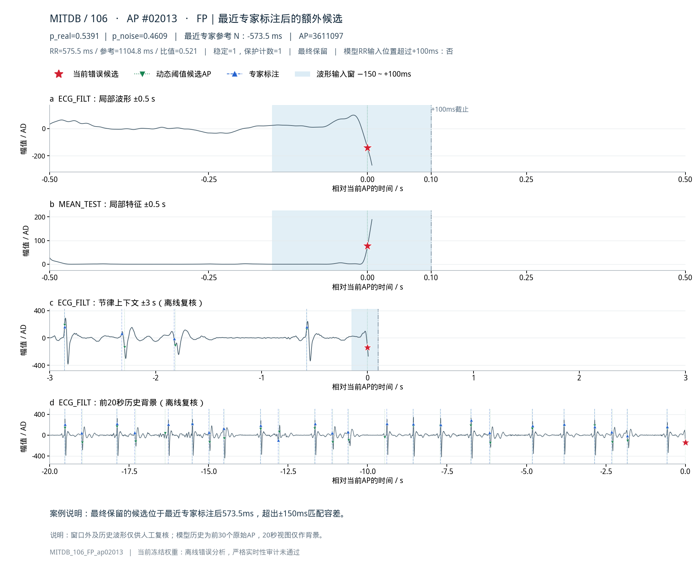
候选位于最近专家标注后573.5ms，超出±150ms评价容差；最终保留为FP。局部形态需结合波形观察，不能仅凭距离判为伪迹。
MITDB_106_FN_event01033_ap01027
FN｜专家参考位置超出波形输入窗
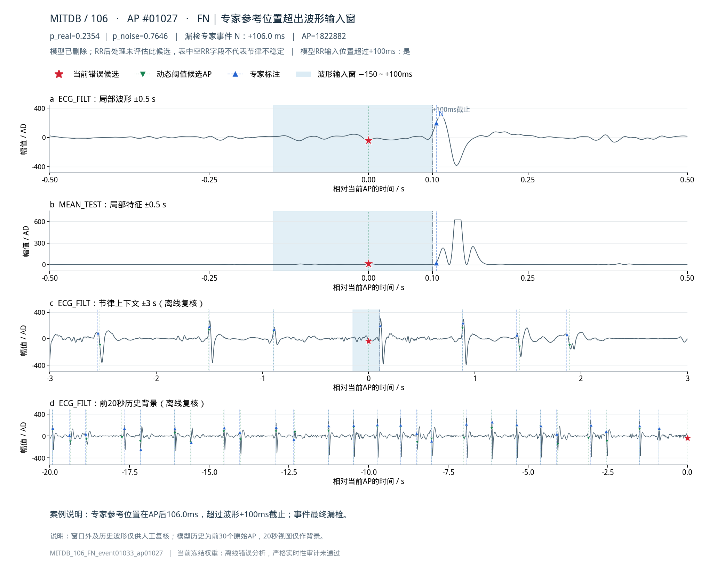
专家N类事件最终漏检；其参考位置在AP后106.0ms，超出波形输入的+100ms截止。该事实说明波形观察受限，不能单独证明模型无法识别。本样本RR输入引用了+100ms之外的位置，不能作为严格实时性能证据。
MITDB_111_FP_ap01737
FP｜最近专家标注前的额外候选
候选位于最近专家标注前151.5ms，超出±150ms评价容差；最终保留为FP。局部形态需结合波形观察，不能仅凭距离判为伪迹。
MITDB_121_FP_ap00300
FP｜最近专家标注前的额外候选
候选位于最近专家标注前209.0ms，超出±150ms评价容差；最终保留为FP。局部形态需结合波形观察，不能仅凭距离判为伪迹。
MITDB_121_FN_event01637_ap01632
FN｜模型阶段漏检，专家位置在窗口内
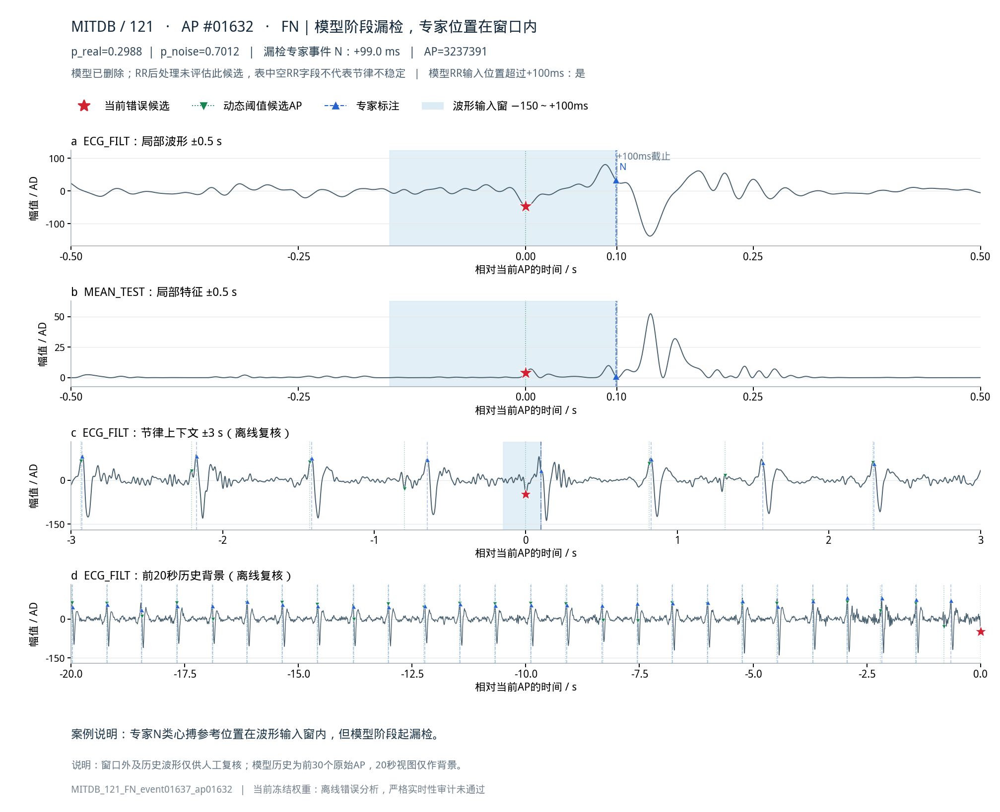
专家N类事件在V11_B阶段检出，模型阶段起漏检；参考位置相对AP为+99.0ms，在−150～+100ms波形窗内。关联候选的低模型概率表明窗口内真实心搏未被放行。本样本RR输入引用了+100ms之外的位置，不能作为严格实时性能证据。
MITDB_200_FP_ap00065
FP｜最近专家标注前的额外候选
候选位于最近专家标注前298.5ms，超出±150ms评价容差；最终保留为FP。局部形态需结合波形观察，不能仅凭距离判为伪迹。
MITDB_200_FP_ap00287
FP｜最近专家标注前的额外候选
候选位于最近专家标注前215.5ms，超出±150ms评价容差；最终保留为FP。局部形态需结合波形观察，不能仅凭距离判为伪迹。
MITDB_200_FP_ap00312
FP｜最近专家标注前的额外候选
候选位于最近专家标注前218.0ms，超出±150ms评价容差；最终保留为FP。局部形态需结合波形观察，不能仅凭距离判为伪迹。
MITDB_200_FP_ap00512
FP｜最近专家标注前的额外候选
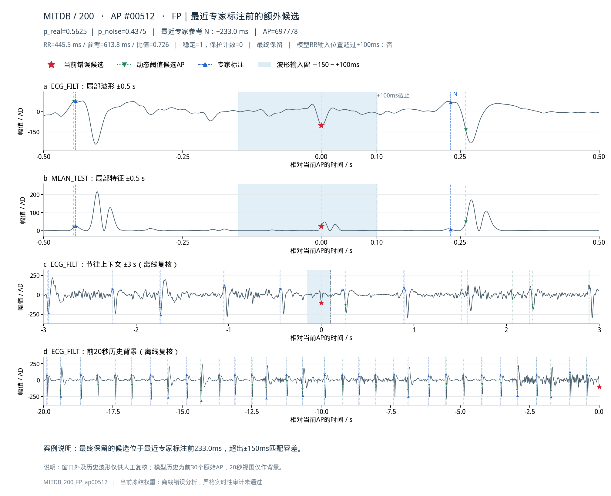
候选位于最近专家标注前233.0ms，超出±150ms评价容差；最终保留为FP。局部形态需结合波形观察，不能仅凭距离判为伪迹。
MITDB_200_FP_ap00595
FP｜最近专家标注前的额外候选
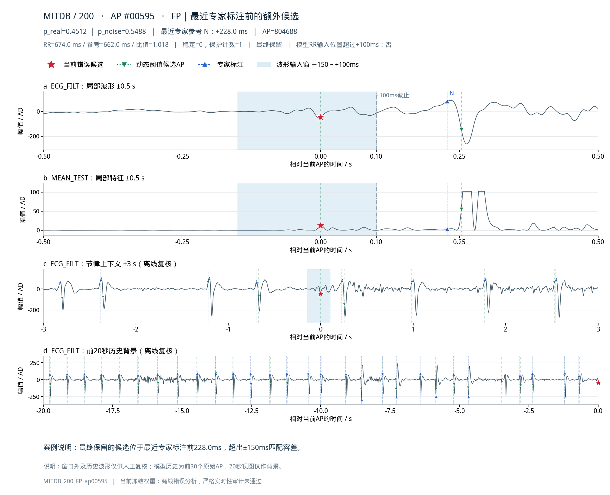
候选位于最近专家标注前228.0ms，超出±150ms评价容差；最终保留为FP。局部形态需结合波形观察，不能仅凭距离判为伪迹。
MITDB_200_FP_ap00665
FP｜最近专家标注前的额外候选
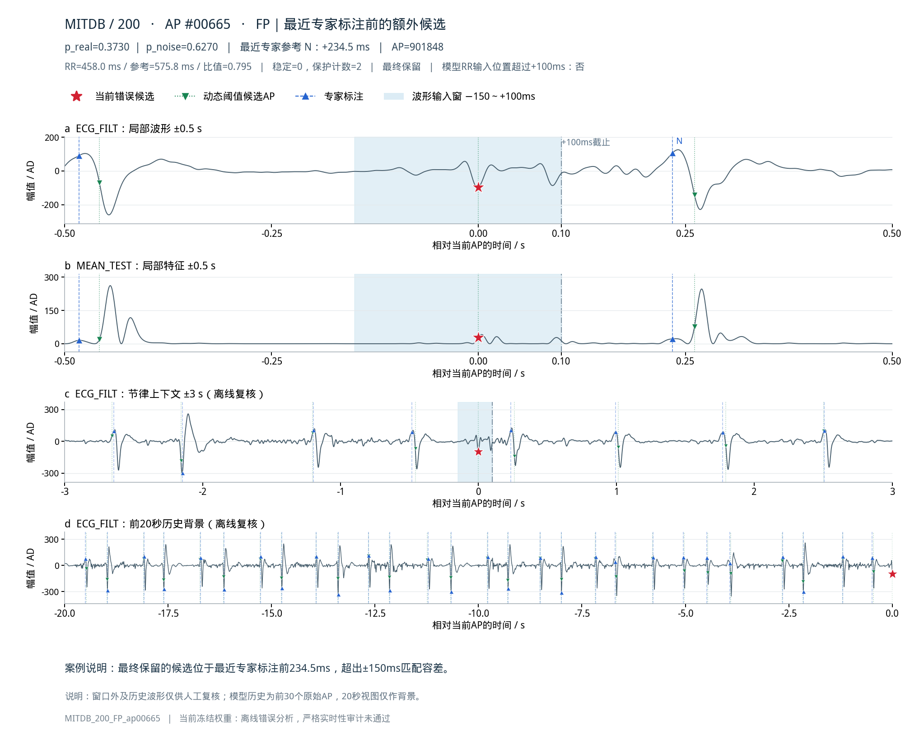
候选位于最近专家标注前234.5ms，超出±150ms评价容差；最终保留为FP。局部形态需结合波形观察，不能仅凭距离判为伪迹。
MITDB_200_FP_ap00709
FP｜最近专家标注前的额外候选
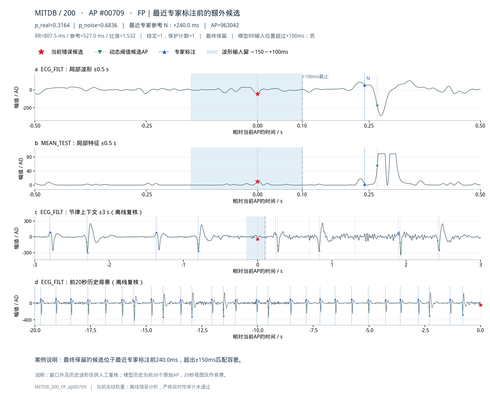
候选位于最近专家标注前240.0ms，超出±150ms评价容差；最终保留为FP。局部形态需结合波形观察，不能仅凭距离判为伪迹。
MITDB_200_FP_ap00740
FP｜最近专家标注前的额外候选
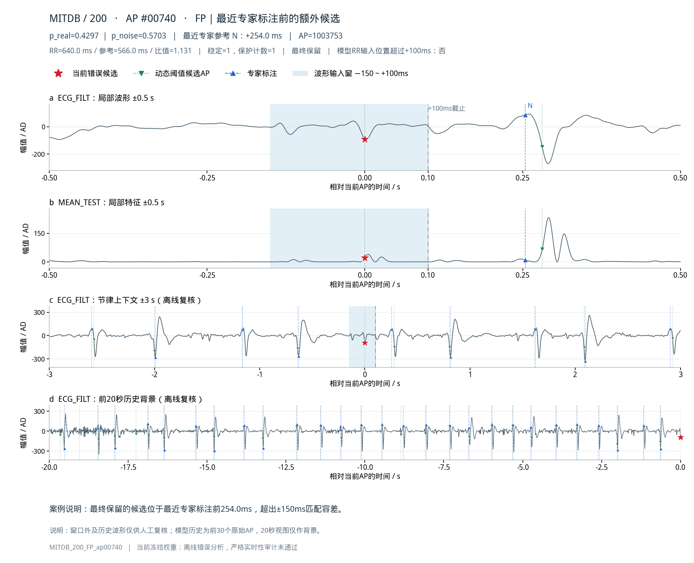
候选位于最近专家标注前254.0ms，超出±150ms评价容差；最终保留为FP。局部形态需结合波形观察，不能仅凭距离判为伪迹。
MITDB_200_FP_ap00879
FP｜最近专家标注前的额外候选
候选位于最近专家标注前435.0ms，超出±150ms评价容差；最终保留为FP。局部形态需结合波形观察，不能仅凭距离判为伪迹。
MITDB_200_FP_ap00927
FP｜最近专家标注前的额外候选
候选位于最近专家标注前182.0ms，超出±150ms评价容差；最终保留为FP。局部形态需结合波形观察，不能仅凭距离判为伪迹。
MITDB_200_FP_ap01111
FP｜最近专家标注前的额外候选
候选位于最近专家标注前162.0ms，超出±150ms评价容差；最终保留为FP。局部形态需结合波形观察，不能仅凭距离判为伪迹。
MITDB_200_FP_ap01422
FP｜最近专家标注前的额外候选
候选位于最近专家标注前211.5ms，超出±150ms评价容差；最终保留为FP。局部形态需结合波形观察，不能仅凭距离判为伪迹。
MITDB_200_FP_ap01460
FP｜最近专家标注前的额外候选
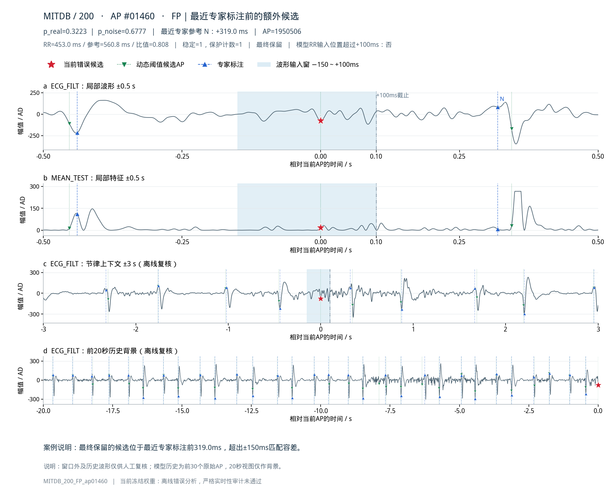
候选位于最近专家标注前319.0ms，超出±150ms评价容差；最终保留为FP。局部形态需结合波形观察，不能仅凭距离判为伪迹。
MITDB_200_FP_ap01697
FP｜最近专家标注前的额外候选
候选位于最近专家标注前175.5ms，超出±150ms评价容差；最终保留为FP。局部形态需结合波形观察，不能仅凭距离判为伪迹。
MITDB_200_FP_ap01856
FP｜最近专家标注前的额外候选
候选位于最近专家标注前365.5ms，超出±150ms评价容差；最终保留为FP。局部形态需结合波形观察，不能仅凭距离判为伪迹。
MITDB_200_FP_ap02435
FP｜最近专家标注前的额外候选
候选位于最近专家标注前230.0ms，超出±150ms评价容差；最终保留为FP。局部形态需结合波形观察，不能仅凭距离判为伪迹。
MITDB_200_FP_ap02444
FP｜最近专家标注前的额外候选
候选位于最近专家标注前373.5ms，超出±150ms评价容差；最终保留为FP。局部形态需结合波形观察，不能仅凭距离判为伪迹。
MITDB_200_FP_ap02505
FP｜最近专家标注前的额外候选
候选位于最近专家标注前166.5ms，超出±150ms评价容差；最终保留为FP。局部形态需结合波形观察，不能仅凭距离判为伪迹。
MITDB_200_FN_event00518_ap00520
FN｜专家参考位置超出波形输入窗
专家N类事件最终漏检；其参考位置在AP后148.0ms，超出波形输入的+100ms截止。该事实说明波形观察受限，不能单独证明模型无法识别。
MITDB_200_FN_event00529_ap00532
FN｜专家参考位置超出波形输入窗
专家N类事件最终漏检；其参考位置在AP后130.0ms，超出波形输入的+100ms截止。该事实说明波形观察受限，不能单独证明模型无法识别。本样本RR输入引用了+100ms之外的位置，不能作为严格实时性能证据。
MITDB_200_FN_event00608_ap00612
FN｜专家参考位置超出波形输入窗
专家N类事件最终漏检；其参考位置在AP后115.5ms，超出波形输入的+100ms截止。该事实说明波形观察受限，不能单独证明模型无法识别。本样本RR输入引用了+100ms之外的位置，不能作为严格实时性能证据。
MITDB_200_FN_event00705_ap00711
FN｜专家参考位置超出波形输入窗
专家V类事件最终漏检；其参考位置在AP后128.5ms，超出波形输入的+100ms截止。该事实说明波形观察受限，不能单独证明模型无法识别。本样本RR输入引用了+100ms之外的位置，不能作为严格实时性能证据。
MITDB_200_FN_event00883_ap00894
FN｜专家参考位置超出波形输入窗
专家N类事件最终漏检；其参考位置在AP后149.0ms，超出波形输入的+100ms截止。该事实说明波形观察受限，不能单独证明模型无法识别。本样本RR输入引用了+100ms之外的位置，不能作为严格实时性能证据。
MITDB_200_FN_event00889_ap00901
FN｜专家参考位置超出波形输入窗
专家N类事件最终漏检；其参考位置在AP后106.0ms，超出波形输入的+100ms截止。该事实说明波形观察受限，不能单独证明模型无法识别。本样本RR输入引用了+100ms之外的位置，不能作为严格实时性能证据。
MITDB_200_FN_event01650_ap01667
FN｜模型阶段漏检，专家位置在窗口内
专家N类事件在V11_B阶段检出，模型阶段起漏检；参考位置相对AP为+81.0ms，在−150～+100ms波形窗内。关联候选的低模型概率表明窗口内真实心搏未被放行。
MITDB_203_FP_ap00070
FP｜最近专家标注后的额外候选
候选位于最近专家标注后362.0ms，超出±150ms评价容差；最终保留为FP。局部形态需结合波形观察，不能仅凭距离判为伪迹。
MITDB_203_FP_ap00166
FP｜最近专家标注前的额外候选
候选位于最近专家标注前169.0ms，超出±150ms评价容差；最终保留为FP。局部形态需结合波形观察，不能仅凭距离判为伪迹。
MITDB_203_FP_ap00364
FP｜最近专家标注后的额外候选
候选位于最近专家标注后293.0ms，超出±150ms评价容差；最终保留为FP。局部形态需结合波形观察，不能仅凭距离判为伪迹。
MITDB_203_FP_ap00647
FP｜最近专家标注前的额外候选
候选位于最近专家标注前187.0ms，超出±150ms评价容差；最终保留为FP。局部形态需结合波形观察，不能仅凭距离判为伪迹。
MITDB_203_FP_ap00798
FP｜最近专家标注前的额外候选
候选位于最近专家标注前152.5ms，超出±150ms评价容差；最终保留为FP。局部形态需结合波形观察，不能仅凭距离判为伪迹。
MITDB_203_FP_ap00893
FP｜最近专家标注前的额外候选
候选位于最近专家标注前165.0ms，超出±150ms评价容差；最终保留为FP。局部形态需结合波形观察，不能仅凭距离判为伪迹。
MITDB_203_FP_ap01480
FP｜最近专家标注后的额外候选
候选位于最近专家标注后209.0ms，超出±150ms评价容差；最终保留为FP。局部形态需结合波形观察，不能仅凭距离判为伪迹。
MITDB_203_FP_ap01481
FP｜最近专家标注后的额外候选
候选位于最近专家标注后379.5ms，超出±150ms评价容差；最终保留为FP。局部形态需结合波形观察，不能仅凭距离判为伪迹。
MITDB_203_FP_ap01486
FP｜最近专家标注后的额外候选
候选位于最近专家标注后366.0ms，超出±150ms评价容差；最终保留为FP。局部形态需结合波形观察，不能仅凭距离判为伪迹。
MITDB_203_FP_ap01515
FP｜最近专家标注后的额外候选
候选位于最近专家标注后341.5ms，超出±150ms评价容差；最终保留为FP。局部形态需结合波形观察，不能仅凭距离判为伪迹。
MITDB_203_FP_ap01538
FP｜同一专家心搏附近的重复候选
候选距最近专家标注-26.0ms，仍在±150ms匹配容差内；该专家事件已由AP#1537匹配，当前候选形成额外FP。
MITDB_203_FP_ap01573
FP｜最近专家标注前的额外候选
候选位于最近专家标注前257.0ms，超出±150ms评价容差；最终保留为FP。局部形态需结合波形观察，不能仅凭距离判为伪迹。
MITDB_203_FP_ap01594
FP｜最近专家标注前的额外候选
候选位于最近专家标注前285.0ms，超出±150ms评价容差；最终保留为FP。局部形态需结合波形观察，不能仅凭距离判为伪迹。
MITDB_203_FP_ap01596
FP｜最近专家标注后的额外候选
候选位于最近专家标注后232.0ms，超出±150ms评价容差；最终保留为FP。局部形态需结合波形观察，不能仅凭距离判为伪迹。
MITDB_203_FP_ap01597
FP｜最近专家标注后的额外候选
候选位于最近专家标注后372.5ms，超出±150ms评价容差；最终保留为FP。局部形态需结合波形观察，不能仅凭距离判为伪迹。
MITDB_203_FP_ap01598
FP｜最近专家标注前的额外候选
候选位于最近专家标注前264.5ms，超出±150ms评价容差；最终保留为FP。局部形态需结合波形观察，不能仅凭距离判为伪迹。
MITDB_203_FP_ap01792
FP｜最近专家标注后的额外候选
候选位于最近专家标注后293.5ms，超出±150ms评价容差；最终保留为FP。局部形态需结合波形观察，不能仅凭距离判为伪迹。
MITDB_203_FP_ap01951
FP｜最近专家标注后的额外候选
候选位于最近专家标注后337.0ms，超出±150ms评价容差；最终保留为FP。局部形态需结合波形观察，不能仅凭距离判为伪迹。
MITDB_203_FP_ap02018
FP｜同一专家心搏附近的重复候选
候选距最近专家标注-80.5ms，仍在±150ms匹配容差内；该专家事件已由AP#2017匹配，当前候选形成额外FP。
MITDB_203_FP_ap02184
FP｜最近专家标注后的额外候选
候选位于最近专家标注后284.5ms，超出±150ms评价容差；最终保留为FP。局部形态需结合波形观察，不能仅凭距离判为伪迹。
MITDB_203_FP_ap02190
FP｜最近专家标注前的额外候选
候选位于最近专家标注前302.5ms，超出±150ms评价容差；最终保留为FP。局部形态需结合波形观察，不能仅凭距离判为伪迹。
MITDB_203_FP_ap02224
FP｜最近专家标注前的额外候选
候选位于最近专家标注前282.5ms，超出±150ms评价容差；最终保留为FP。局部形态需结合波形观察，不能仅凭距离判为伪迹。
MITDB_203_FP_ap02400
FP｜同一专家心搏附近的重复候选
候选距最近专家标注-61.0ms，仍在±150ms匹配容差内；该专家事件已由AP#2399匹配，当前候选形成额外FP。
MITDB_203_FP_ap02402
FP｜最近专家标注后的额外候选
候选位于最近专家标注后271.5ms，超出±150ms评价容差；最终保留为FP。局部形态需结合波形观察，不能仅凭距离判为伪迹。
MITDB_203_FP_ap02541
FP｜最近专家标注后的额外候选
候选位于最近专家标注后292.5ms，超出±150ms评价容差；最终保留为FP。局部形态需结合波形观察，不能仅凭距离判为伪迹。
MITDB_203_FP_ap02545
FP｜最近专家标注前的额外候选
候选位于最近专家标注前321.5ms，超出±150ms评价容差；最终保留为FP。局部形态需结合波形观察，不能仅凭距离判为伪迹。
MITDB_203_FP_ap02547
FP｜最近专家标注后的额外候选
候选位于最近专家标注后235.5ms，超出±150ms评价容差；最终保留为FP。局部形态需结合波形观察，不能仅凭距离判为伪迹。
MITDB_203_FN_event00175_ap00167
FN｜模型阶段漏检，专家位置在窗口内
专家N类事件在V11_B阶段检出，模型阶段起漏检；参考位置相对AP为-21.0ms，在−150～+100ms波形窗内。关联候选的低模型概率表明窗口内真实心搏未被放行。
MITDB_203_FN_event00176_ap00168
FN｜模型阶段漏检，专家位置在窗口内
专家V类事件在V11_B阶段检出，模型阶段起漏检；参考位置相对AP为-112.0ms，在−150～+100ms波形窗内。关联候选的低模型概率表明窗口内真实心搏未被放行。本样本RR输入引用了+100ms之外的位置，不能作为严格实时性能证据。
MITDB_203_FN_event00178_ap00171
FN｜模型阶段漏检，专家位置在窗口内
专家N类事件在V11_B阶段检出，模型阶段起漏检；参考位置相对AP为-22.0ms，在−150～+100ms波形窗内。关联候选的低模型概率表明窗口内真实心搏未被放行。
MITDB_203_FN_event00522_ap00515
FN｜模型阶段漏检，专家位置在窗口内
专家V类事件在V11_B阶段检出，模型阶段起漏检；参考位置相对AP为-22.0ms，在−150～+100ms波形窗内。关联候选的低模型概率表明窗口内真实心搏未被放行。
MITDB_203_FN_event00650_ap00643
FN｜专家参考位置超出波形输入窗
专家N类事件最终漏检；其参考位置在AP后140.5ms，超出波形输入的+100ms截止。该事实说明波形观察受限，不能单独证明模型无法识别。
MITDB_203_FN_event00775_ap00770
FN｜模型阶段漏检，专家位置在窗口内
专家N类事件在V11_B阶段检出，模型阶段起漏检；参考位置相对AP为+80.0ms，在−150～+100ms波形窗内。关联候选的低模型概率表明窗口内真实心搏未被放行。
MITDB_203_FN_event00802_ap00799
FN｜模型阶段漏检，专家位置在窗口内
专家N类事件在V11_B阶段检出，模型阶段起漏检；参考位置相对AP为-20.5ms，在−150～+100ms波形窗内。关联候选的低模型概率表明窗口内真实心搏未被放行。
MITDB_203_FN_event00887_ap00890
FN｜模型阶段漏检，专家位置在窗口内
专家N类事件在V11_B阶段检出，模型阶段起漏检；参考位置相对AP为+95.0ms，在−150～+100ms波形窗内。关联候选的低模型概率表明窗口内真实心搏未被放行。
MITDB_203_FN_event00922_ap00929
FN｜模型阶段漏检，专家位置在窗口内
专家N类事件在V11_B阶段检出，模型阶段起漏检；参考位置相对AP为-25.0ms，在−150～+100ms波形窗内。关联候选的低模型概率表明窗口内真实心搏未被放行。
MITDB_203_FN_event01065_ap01076
FN｜专家参考位置超出波形输入窗
专家N类事件最终漏检；其参考位置在AP后113.5ms，超出波形输入的+100ms截止。该事实说明波形观察受限，不能单独证明模型无法识别。本样本RR输入引用了+100ms之外的位置，不能作为严格实时性能证据。
MITDB_203_FN_event01303_ap01318
FN｜模型阶段漏检，专家位置在窗口内
专家N类事件在V11_B阶段检出，模型阶段起漏检；参考位置相对AP为-5.0ms，在−150～+100ms波形窗内。关联候选的低模型概率表明窗口内真实心搏未被放行。
MITDB_203_FN_event01390_ap01406
FN｜模型阶段漏检，专家位置在窗口内
专家N类事件在V11_B阶段检出，模型阶段起漏检；参考位置相对AP为-28.0ms，在−150～+100ms波形窗内。关联候选的低模型概率表明窗口内真实心搏未被放行。
MITDB_203_FN_event01432_ap01448
FN｜模型阶段漏检，专家位置在窗口内
专家N类事件在V11_B阶段检出，模型阶段起漏检；参考位置相对AP为-8.5ms，在−150～+100ms波形窗内。关联候选的低模型概率表明窗口内真实心搏未被放行。
MITDB_203_FN_event01476_ap01497
FN｜专家参考位置超出波形输入窗
专家N类事件最终漏检；其参考位置在AP后136.5ms，超出波形输入的+100ms截止。该事实说明波形观察受限，不能单独证明模型无法识别。本样本RR输入引用了+100ms之外的位置，不能作为严格实时性能证据。
MITDB_203_FN_event01477_ap01498
FN｜专家参考位置超出波形输入窗
专家N类事件最终漏检；其参考位置在AP后132.0ms，超出波形输入的+100ms截止。该事实说明波形观察受限，不能单独证明模型无法识别。本样本RR输入引用了+100ms之外的位置，不能作为严格实时性能证据。
MITDB_203_FN_event01559_ap01585
FN｜专家参考位置超出波形输入窗
专家N类事件最终漏检；其参考位置在AP后131.5ms，超出波形输入的+100ms截止。该事实说明波形观察受限，不能单独证明模型无法识别。本样本RR输入引用了+100ms之外的位置，不能作为严格实时性能证据。
MITDB_203_FN_event01763_ap01795
FN｜模型阶段漏检，专家位置在窗口内
专家N类事件在V11_B阶段检出，模型阶段起漏检；参考位置相对AP为+90.5ms，在−150～+100ms波形窗内。关联候选的低模型概率表明窗口内真实心搏未被放行。
MITDB_203_FN_event01942_ap01984
FN｜模型阶段漏检，专家位置在窗口内
专家V类事件在V11_B阶段检出，模型阶段起漏检；参考位置相对AP为+16.0ms，在−150～+100ms波形窗内。关联候选的低模型概率表明窗口内真实心搏未被放行。
MITDB_203_FN_event01968_ap02011
FN｜专家参考位置超出波形输入窗
专家N类事件最终漏检；其参考位置在AP后111.0ms，超出波形输入的+100ms截止。该事实说明波形观察受限，不能单独证明模型无法识别。
MITDB_203_FN_event02350_ap02410
FN｜模型阶段漏检，专家位置在窗口内
专家N类事件在V11_B阶段检出，模型阶段起漏检；参考位置相对AP为-27.0ms，在−150～+100ms波形窗内。关联候选的低模型概率表明窗口内真实心搏未被放行。
MITDB_203_FN_event02355_ap02416
FN｜模型阶段漏检，专家位置在窗口内
专家N类事件在V11_B阶段检出，模型阶段起漏检；参考位置相对AP为-20.5ms，在−150～+100ms波形窗内。关联候选的低模型概率表明窗口内真实心搏未被放行。
MITDB_203_FN_event02388_ap02450
FN｜专家参考位置超出波形输入窗
专家N类事件最终漏检；其参考位置在AP后109.5ms，超出波形输入的+100ms截止。该事实说明波形观察受限，不能单独证明模型无法识别。本样本RR输入引用了+100ms之外的位置，不能作为严格实时性能证据。
MITDB_203_FN_event02676_ap02738
FN｜模型阶段漏检，专家位置在窗口内
专家N类事件在V11_B阶段检出，模型阶段起漏检；参考位置相对AP为-27.0ms，在−150～+100ms波形窗内。关联候选的低模型概率表明窗口内真实心搏未被放行。
MITDB_213_FP_ap01803
FP｜最近专家标注前的额外候选
候选位于最近专家标注前151.5ms，超出±150ms评价容差；最终保留为FP。局部形态需结合波形观察，不能仅凭距离判为伪迹。
MITDB_214_FP_ap00093
FP｜最近专家标注后的额外候选
候选位于最近专家标注后399.5ms，超出±150ms评价容差；最终保留为FP。局部形态需结合波形观察，不能仅凭距离判为伪迹。
MITDB_222_FP_ap01976
FP｜最近专家标注前的额外候选
候选位于最近专家标注前189.0ms，超出±150ms评价容差；最终保留为FP。局部形态需结合波形观察，不能仅凭距离判为伪迹。
MITDB_222_FN_event01810_ap01802
FN｜专家参考位置超出波形输入窗
专家j类事件最终漏检；其参考位置在AP后120.0ms，超出波形输入的+100ms截止。该事实说明波形观察受限，不能单独证明模型无法识别。本样本RR输入引用了+100ms之外的位置，不能作为严格实时性能证据。
MITDB_222_FN_event01980_ap01973
FN｜专家参考位置超出波形输入窗
专家N类事件最终漏检；其参考位置在AP后136.0ms，超出波形输入的+100ms截止。该事实说明波形观察受限，不能单独证明模型无法识别。本样本RR输入引用了+100ms之外的位置，不能作为严格实时性能证据。
MITDB_228_FP_ap00010
FP｜最近专家标注前的额外候选
候选位于最近专家标注前185.5ms，超出±150ms评价容差；最终保留为FP。局部形态需结合波形观察，不能仅凭距离判为伪迹。该AP属于前30个直接放行候选，p_real=1并非模型输出。
MITDB_228_FP_ap00012
FP｜最近专家标注前的额外候选
候选位于最近专家标注前467.5ms，超出±150ms评价容差；最终保留为FP。局部形态需结合波形观察，不能仅凭距离判为伪迹。该AP属于前30个直接放行候选，p_real=1并非模型输出。
MITDB_228_FP_ap00052
FP｜最近专家标注前的额外候选
候选位于最近专家标注前299.5ms，超出±150ms评价容差；最终保留为FP。局部形态需结合波形观察，不能仅凭距离判为伪迹。
MITDB_228_FP_ap00133
FP｜最近专家标注后的额外候选
候选位于最近专家标注后563.5ms，超出±150ms评价容差；最终保留为FP。局部形态需结合波形观察，不能仅凭距离判为伪迹。
MITDB_228_FP_ap00329
FP｜同一专家心搏附近的重复候选
候选距最近专家标注-86.5ms，仍在±150ms匹配容差内；该专家事件已由AP#328匹配，当前候选形成额外FP。
MITDB_228_FP_ap00403
FP｜最近专家标注前的额外候选
候选位于最近专家标注前274.5ms，超出±150ms评价容差；最终保留为FP。局部形态需结合波形观察，不能仅凭距离判为伪迹。
MITDB_228_FP_ap00555
FP｜最近专家标注前的额外候选
候选位于最近专家标注前155.5ms，超出±150ms评价容差；最终保留为FP。局部形态需结合波形观察，不能仅凭距离判为伪迹。
MITDB_228_FP_ap00738
FP｜最近专家标注前的额外候选
候选位于最近专家标注前253.5ms，超出±150ms评价容差；最终保留为FP。局部形态需结合波形观察，不能仅凭距离判为伪迹。
MITDB_228_FP_ap01577
FP｜最近专家标注前的额外候选
候选位于最近专家标注前155.5ms，超出±150ms评价容差；最终保留为FP。局部形态需结合波形观察，不能仅凭距离判为伪迹。
MITDB_228_FP_ap01664
FP｜最近专家标注后的额外候选
候选位于最近专家标注后425.0ms，超出±150ms评价容差；最终保留为FP。局部形态需结合波形观察，不能仅凭距离判为伪迹。
MITDB_228_FP_ap01698
FP｜同一专家心搏附近的重复候选
候选距最近专家标注-66.0ms，仍在±150ms匹配容差内；该专家事件已由AP#1697匹配，当前候选形成额外FP。
MITDB_228_FN_event00224_ap00226
FN｜专家参考位置超出波形输入窗
专家N类事件最终漏检；其参考位置在AP后117.0ms，超出波形输入的+100ms截止。该事实说明波形观察受限，不能单独证明模型无法识别。本样本RR输入引用了+100ms之外的位置，不能作为严格实时性能证据。
MITDB_228_FN_event00281_ap00283
FN｜模型阶段漏检，专家位置在窗口内
专家N类事件在V11_B阶段检出，模型阶段起漏检；参考位置相对AP为-25.5ms，在−150～+100ms波形窗内。关联候选的低模型概率表明窗口内真实心搏未被放行。
MITDB_228_FN_event00285_ap00287
FN｜模型阶段漏检，专家位置在窗口内
专家N类事件在V11_B阶段检出，模型阶段起漏检；参考位置相对AP为-23.0ms，在−150～+100ms波形窗内。关联候选的低模型概率表明窗口内真实心搏未被放行。
MITDB_228_FN_event00289_ap00291
FN｜模型阶段漏检，专家位置在窗口内
专家N类事件在V11_B阶段检出，模型阶段起漏检；参考位置相对AP为-21.0ms，在−150～+100ms波形窗内。关联候选的低模型概率表明窗口内真实心搏未被放行。
MITDB_228_FN_event00295_ap00297
FN｜模型阶段漏检，专家位置在窗口内
专家N类事件在V11_B阶段检出，模型阶段起漏检；参考位置相对AP为-23.0ms，在−150～+100ms波形窗内。关联候选的低模型概率表明窗口内真实心搏未被放行。
MITDB_228_FN_event00305_ap00307
FN｜专家参考位置超出波形输入窗
专家N类事件最终漏检；其参考位置在AP后121.5ms，超出波形输入的+100ms截止。该事实说明波形观察受限，不能单独证明模型无法识别。本样本RR输入引用了+100ms之外的位置，不能作为严格实时性能证据。
MITDB_228_FN_event00323_ap00326
FN｜模型阶段漏检，专家位置在窗口内
专家N类事件在V11_B阶段检出，模型阶段起漏检；参考位置相对AP为+33.5ms，在−150～+100ms波形窗内。关联候选的低模型概率表明窗口内真实心搏未被放行。
MITDB_228_FN_event00325_ap00332
FN｜模型阶段漏检，专家位置在窗口内
专家N类事件在V11_B阶段检出，模型阶段起漏检；参考位置相对AP为-30.0ms，在−150～+100ms波形窗内。关联候选的低模型概率表明窗口内真实心搏未被放行。
MITDB_228_FN_event00327_ap00336
FN｜模型阶段漏检，专家位置在窗口内
专家N类事件在V11_B阶段检出，模型阶段起漏检；参考位置相对AP为-26.0ms，在−150～+100ms波形窗内。关联候选的低模型概率表明窗口内真实心搏未被放行。
MITDB_228_FN_event01626_ap01663
FN｜专家参考位置超出波形输入窗
专家V类事件最终漏检；其参考位置在AP后143.5ms，超出波形输入的+100ms截止。该事实说明波形观察受限，不能单独证明模型无法识别。
MITDB_228_FN_event01672_ap01720
FN｜模型阶段漏检，专家位置在窗口内
专家N类事件在V11_B阶段检出，模型阶段起漏检；参考位置相对AP为-34.5ms，在−150～+100ms波形窗内。关联候选的低模型概率表明窗口内真实心搏未被放行。
MITDB_228_FN_event01673_ap01722
FN｜模型阶段漏检，专家位置在窗口内
专家N类事件在V11_B阶段检出，模型阶段起漏检；参考位置相对AP为-28.0ms，在−150～+100ms波形窗内。关联候选的低模型概率表明窗口内真实心搏未被放行。
MITDB_228_FN_event01675_ap01727
FN｜模型阶段漏检，专家位置在窗口内
专家N类事件在V11_B阶段检出，模型阶段起漏检；参考位置相对AP为-27.0ms，在−150～+100ms波形窗内。关联候选的低模型概率表明窗口内真实心搏未被放行。
MITDB_228_FN_event01703_ap01761
FN｜模型阶段漏检，专家位置在窗口内
专家N类事件在V11_B阶段检出，模型阶段起漏检；参考位置相对AP为+72.5ms，在−150～+100ms波形窗内。关联候选的低模型概率表明窗口内真实心搏未被放行。
MITDB_228_FN_event01726_ap01792
FN｜模型阶段漏检，专家位置在窗口内
专家N类事件在V11_B阶段检出，模型阶段起漏检；参考位置相对AP为-26.0ms，在−150～+100ms波形窗内。关联候选的低模型概率表明窗口内真实心搏未被放行。
MITDB_228_FN_event01727_ap01793
FN｜专家参考位置超出波形输入窗
专家N类事件最终漏检；其参考位置在AP后144.5ms，超出波形输入的+100ms截止。该事实说明波形观察受限，不能单独证明模型无法识别。本样本RR输入引用了+100ms之外的位置，不能作为严格实时性能证据。
MITDB_228_FN_event01864_ap01934
FN｜专家参考位置超出波形输入窗
专家N类事件最终漏检；其参考位置在AP后150.0ms，超出波形输入的+100ms截止。该事实说明波形观察受限，不能单独证明模型无法识别。
MITDB_228_FN_event01945_ap02019
FN｜专家参考位置超出波形输入窗
专家N类事件最终漏检；其参考位置在AP后126.5ms，超出波形输入的+100ms截止。该事实说明波形观察受限，不能单独证明模型无法识别。本样本RR输入引用了+100ms之外的位置，不能作为严格实时性能证据。
MITDB_233_FN_event00101_ap00091
FN｜专家参考位置超出波形输入窗
专家N类事件最终漏检；其参考位置在AP后118.0ms，超出波形输入的+100ms截止。该事实说明波形观察受限，不能单独证明模型无法识别。本样本RR输入引用了+100ms之外的位置，不能作为严格实时性能证据。
SLPDB_slp60_FP_ap09945
FP｜最近专家标注前的额外候选
候选位于最近专家标注前216.0ms，超出±150ms评价容差；最终保留为FP。局部形态需结合波形观察，不能仅凭距离判为伪迹。
SLPDB_slp61_FP_ap02385
FP｜最近专家标注前的额外候选
候选位于最近专家标注前210.5ms，超出±150ms评价容差；最终保留为FP。局部形态需结合波形观察，不能仅凭距离判为伪迹。
SLPDB_slp61_FP_ap02479
FP｜最近专家标注前的额外候选
候选位于最近专家标注前360.5ms，超出±150ms评价容差；最终保留为FP。局部形态需结合波形观察，不能仅凭距离判为伪迹。
SLPDB_slp61_FP_ap02522
FP｜最近专家标注前的额外候选
候选位于最近专家标注前253.0ms，超出±150ms评价容差；最终保留为FP。局部形态需结合波形观察，不能仅凭距离判为伪迹。
SLPDB_slp61_FP_ap02525
FP｜最近专家标注前的额外候选
候选位于最近专家标注前252.5ms，超出±150ms评价容差；最终保留为FP。局部形态需结合波形观察，不能仅凭距离判为伪迹。
SLPDB_slp61_FP_ap02625
FP｜最近专家标注后的额外候选
候选位于最近专家标注后362.0ms，超出±150ms评价容差；最终保留为FP。局部形态需结合波形观察，不能仅凭距离判为伪迹。
SLPDB_slp61_FP_ap02820
FP｜最近专家标注前的额外候选
候选位于最近专家标注前295.0ms，超出±150ms评价容差；最终保留为FP。局部形态需结合波形观察，不能仅凭距离判为伪迹。